Hans Petter Langtangen
(1962-2016)
Strona domowa Github DocOnce i publikacje Książka (EN) Ten wykład w aktualnej wersji (PDF)Metoda elementów skończonych - wstęp
Finite Element Method, FEM, MES
|
|
|

A dolphin and its flow
|
|
|
Rozwiązywania \PDE{} przy pomocy FEM
- Przekształcenie zagadnienia brzegowego do postaci wariacyjnej
- Zdefiniowanie funkcji aproksymujących dla elementów skończonych
- Przkształcenie zagadnienia ciągłego w dyskretne wyrażone układem równań liniowych (URL)
- Rozwiązanie URL
- MES - aproksymacja przestrzeni
- FDM/(metoda rozw. ODE) - aproksymacja w czasie
Etapy nauki FEM
- Elementy teoria aproksymacji, a nie rozw. \PDE
- Wstęp do aproksymacji elementami skończonymi
- W końcu zastosowanie powyższego do rozw. \PDE
Istnieje wiele wariantów i odmian \FEM. Dzięki proponowanemu podejściu łatwiej się ''połapać''. Unikamy zamieszania wielością podejść do tematu, koncepcji i technicznych/implementacyjnych szczegółów.
Aproksymacja w przestrzeniach wektorowych
Jak znaleźć wektor pewnej przestrzeni, który aproksymuje wektor przestrzeni
- większym wymiarze?
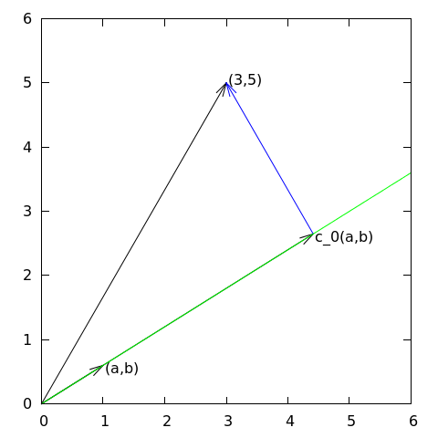
Aproksymacja jako kombinacja liniowa założonych funkcji bazowych
Ogólna idea poszukiwania elementu (wektora/funkcji) \( u(x) \) pewnej przestrzeni przybliżającego zadany element \( f(x) \):
$$
u(x) = \sum_{i=0}^N c_I \baspsi_i(x)
$$
gdzie
- \( \baspsi_i(x) \) założone funkcje
- \( c_i \), \( i=0,\ldots,N \) nieznane współczynniki (do wyznaczenia)
Trzy główne sposoby wyznaczania niewiadomych współczynników
- Metoda najmniejszych kwadratów (\LSM{} Least Squares Method)
- metoda Galerkina
- Metoda kolokacji
Sposób opisu i notacja zaproponowane w materiałach wybrane w sposób ułatwiający zrozumienie open-source'owego pakietu FEniCS do obliczeń metodą elementów skończonych.
Aproksymacja wektorów: przykład – aproksymacja na płaszczyznie
Zadanie:
Znajdź przybliżenie wektora \( \f = (3,5) \) wzdłuż zadanego kierunku.
\vspace{-0.5cm}
\vspace{-1cm}
analogie: element - punkt - wektor - funkcja
Aproksymacja wektorów: przestrzenie wektorowe – terminologia
$$ V = \mbox{span}\,\{ \psib_0\} $$
\vspace{-0.4cm}
- \( \psib_0 \) wektor bazowy przestrzeni \( V \)
- Znajdź \( \u = c_0\psib_0\in V \)
- Jak wyznaczyć \( c_0 \) tak, aby \( \u \) "najlepiej" przybliżało \( \f \)?
- Wizualnie rozwiązanie narzuca się samo
- Jak sformułować to ogólnie, w języku matematyki?
Niech
- \( \e = \f - \u \) to błąd
- \( (\u,\v) \) – iloczyn skalarny wektorów
- \( ||\e|| = \sqrt{(\e, \e)} \) – norma błędu (jaka? (normy \( p \)-te))
\vspace{-0.4cm}
\( (a,b) \) – punkt/wektor przestrzeni (dwuwymiarowej)
\( (\u,\v) \) – iloczyn skalarny dwóch wektorów przestrzeni (dowolnie-wymiarowej)
Metoda najmniejszych kwadratów - idea
- Idea: znaleźć \( c_0 \) takie, aby \( ||\e|| \) był minimalizowany (jak najmniejszy/najkrótszy)
- Dla wygody (matematycznej): minimalizujemy \( E=||\e||^2 \)
$$
\begin{equation*}
\frac{\partial E}{\partial c_0} = 0
\end{equation*}
$$
Metoda najmniejszych kwadratów - obliczenia
$$
\begin{align*}
E(c_0) &= (\e,\e) = (\f - \u, \f - \u) = (\f - c_0\psib_0, \f - c_0\psib_0)\\
&= (\f,\f) - 2c_0(\f,\psib_0) + c_0^2(\psib_0,\psib_0)
\end{align*}
$$
$$
\begin{equation}
\frac{\partial E}{\partial c_0} = -2(\f,\psib_0) + 2c_0 (\psib_0,\psib_0) = 0
\tag{1}
\end{equation}
$$
$$
c_0 = \frac{(\f,\psib_0)}{(\psib_0,\psib_0)} = \frac{3a + 5b}{a^2 + b^2}
$$
Spostrzeżenie (na później): warunek znikania pochodnej (1) można równoważnie zapisać jako:
$$ (\e, \psib_0) = 0 $$
\vspace{-0.8cm} \tiny
$$
(\e, \psib_0) = (\f - \u, \psib_0) = (\f, \psib_0) - (\u, \psib_0) ....
\quad\quad (*-2 ...)
$$
$$
[\f-\u] \cdot
\left[
\begin{array}{c}
\\
\psib_0 \\
\\
\end{array}
\right]
=
[\quad\quad \f \quad\quad] \cdot
\left[
\begin{array}{c}
\\
\psib_0 \\
\\
\end{array}
\right]
-
[\quad\quad \u \quad\quad] \cdot
\left[
\begin{array}{c}
\\
\psib_0 \\
\\
\end{array}
\right]
$$
Metoda Galerkina
|
|
|
Aproksymacja wektora przestrzeni dowolniewymiarowej
Dla danego wektora \( \f \), znajdź przybliżenie \( \u\in V \):
$$
\begin{equation*}
V = \hbox{span}\,\{\psib_0,\ldots,\psib_N\}
\end{equation*}
$$
(\( \hbox{span} \) czyt. przestrzeń rozpięta na wektorach...)
Mając dany zbiór wektorów niezależnych liniowo \( \psib_0,\ldots,\psib_N \), dowolny wektor \( \u\in V \) można zapisać jako:
$$ \u = \sum_{j=0}^Nc_j\psib_j$$
TODO
Metoda najmniejszych kwadratów
Idea: znaleźć takie \( c_0,\ldots,c_N \), aby \( E= ||\e||^2 \) był minimalizowany, \( \e=\f-\u \).
$$
\begin{align*}
E(c_0,\ldots,c_N) &= (\e,\e) = (\f -\sum_jc_j\psib_j,\f -\sum_jc_j\psib_j)
\nonumber\\
&= (\f,\f) - 2\sum_{j=0}^Nc_j(\f,\psib_j) +
\sum_{p=0}^N\sum_{q=0}^N c_pc_q(\psib_p,\psib_q)
\end{align*}
$$
$$
\begin{equation*}
\frac{\partial E}{\partial c_i} = 0,\quad i=0,\ldots,N
\end{equation*}
$$
Po odrobinie obliczeń otrzymuje się układ równań liniowych:
$$
\begin{align}
\sum_{j=0}^N A_{i,j}c_j &= b_i,\quad i=0,\ldots,N
\tag{2}\\
A_{i,j} &= (\psib_i,\psib_j)
\tag{3}\\
b_i &= (\psib_i, \f)
\tag{4}
\end{align}
$$
Metoda Galerkina
Można pokazać, że poszukiwanie minimalnego \( ||\e|| \) jest równoważne poszukiwaniu \( \e \) ortogonalnego do wszystkich \( \v\in V \):
$$
(\e,\v)=0,\quad \forall\v\in V
$$
co jest równoważne temu aby \( \e \) był ortogonalny do każdego wektora bazowego:
$$ (\e,\psib_i)=0,\quad i=0,\ldots,N $$
Warunek ortogonalności – podstawa metody Galerkina. Generuje ten sam układ równań liniowych co \LSM.
Aproksymacja funkcji w przestrzeni funkcyjnej
Niech \( V \) będzie przestrzenią funkcyjną rozpiętą na zbiorze funkcji bazowych \( \baspsi_0,\ldots,\baspsi_N \),
$$
\begin{equation*}
V = \hbox{span}\,\{\baspsi_0,\ldots,\baspsi_N\}
\end{equation*}
$$
Dowolną funkcję tej przestrzeni \( u\in V \) można przedstawić jako kombinację liniową funkcji bazowych:
$$ u = \sum_{j\in\If} c_j\baspsi_j,\quad\If = \{0,1,\ldots,N\} $$
Uogólnienie \LSM{} na przestrzenie funkcyjne
Tak jak dla przestrzeni wektorowych, minimalizujemy normę błędu \( E \), ze względu na współczynniki \( c_j \), \( j\in\If \):
$$
E = (e,e) = (f-u,f-u) = \left(f(x)-\sum_{j\in\If} c_j\baspsi_j(x), f(x)-\sum_{j\in\If} c_j\baspsi_j(x)\right)
$$
$$ \frac{\partial E}{\partial c_i} = 0,\quad i=\in\If $$
Czym jest iloczyn skalarny jeśli \( \baspsi_i \) jest funkcją?
$$(f,g) = \int_\Omega f(x)g(x)\, dx$$
(iloczyn skalarny funkcji cg jako uogólnienie il. skalarnego funkcji dyskretnych \( (\u, \v) = \sum_j u_jv_j \))
Szczegóły \LSM{}
$$
\begin{align*}
E(c_0,\ldots,c_N) &= (e,e) = (f-u,f-u) \\
&= (f,f) -2\sum_{j\in\If} c_j(f,\baspsi_i)
+ \sum_{p\in\If}\sum_{q\in\If} c_pc_q(\baspsi_p,\baspsi_q)
\end{align*}
$$
$$ \frac{\partial E}{\partial c_i} = 0,\quad i=\in\If $$
Obliczenia identyczne jak dla przypadku wektorowego -> w rezultacie otrzymujemy układ równań liniowych
$$
\sum_{j\in\If}^N A_{i,j}c_j = b_i,\ i\in\If,\quad
A_{i,j} = (\baspsi_i,\baspsi_j),\
b_i = (f,\baspsi_i)
$$
Metoda Galerkina
Jak poprzednio minimalizacja \( (e,e) \) jest równoważna
$$
(e,\baspsi_i)=0,\quad i\in\If
\tag{5}
$$
co z kolei jest równoważne
$$
(e,v)=0,\quad\forall v\in V
\tag{6}
$$
Równoważność wzorów jak dla przestrzeni wektorowych.
Równoważność wzorów jak dla wyprowadzenia przy pomocy \LSM.
Przykład: aproksymacja paraboli funkcją liniową
Dla zadanej funkcji \( f(x) = 10(x-1)^2 - 1 \) znaleźć jej przybliżenie funkcją liniową.
$$
\begin{equation*} V = \hbox{span}\,\{1, x\} \end{equation*}
$$
czyli \( \baspsi_0(x)=1 \), \( \baspsi_1(x)=x \) oraz \( N=1 \). Szukane
$$
\begin{equation*}
u=c_0\baspsi_0(x) + c_1\baspsi_1(x) = c_0 + c_1x
\end{equation*}
$$
Przykład: aproksymacja paraboli funkcją liniową
$$
\begin{align*}
A_{0,0} &= (\baspsi_0,\baspsi_0) = \int_1^21\cdot 1\, dx = 1\\
A_{0,1} &= (\baspsi_0,\baspsi_1) = \int_1^2 1\cdot x\, dx = 3/2\\
A_{1,0} &= A_{0,1} = 3/2\\
A_{1,1} &= (\baspsi_1,\baspsi_1) = \int_1^2 x\cdot x\,dx = 7/3\\
b_1 &= (f,\baspsi_0) = \int_1^2 (10(x-1)^2 - 1)\cdot 1 \, dx = 7/3\\
b_2 &= (f,\baspsi_1) = \int_1^2 (10(x-1)^2 - 1)\cdot x\, dx = 13/3
\end{align*}
$$
Rozwiązanie układu równań 2x2:
$$ c_0 = -38/3,\quad c_1 = 10,\quad u(x) = 10x - \frac{38}{3} $$
Przykład: aproksymacja paraboli funkcją liniową
$$
\begin{align*}
\left[
\begin{array}{cc}
1 & \frac{3}{2} \\
\frac{3}{2} & \frac{7}{3} \\
\end{array}
\right]
\left[
\begin{array}{c}
c_0 \\
c_1 \\
\end{array}
\right]
=
\left[
\begin{array}{c}
\frac{7}{3} \\
\frac{13}{3} \\
\end{array}
\right]
\quad
\rightarrow
\quad
\left[
\begin{array}{c}
c_0 \\
c_1 \\
\end{array}
\right]
=
\left[
\begin{array}{c}
-38/3 \\
10 \\
\end{array}
\right]
\end{align*}
$$
$$ u(x) = 10x - 12 \frac{2}{3} $$
\vspace{-1.0cm}
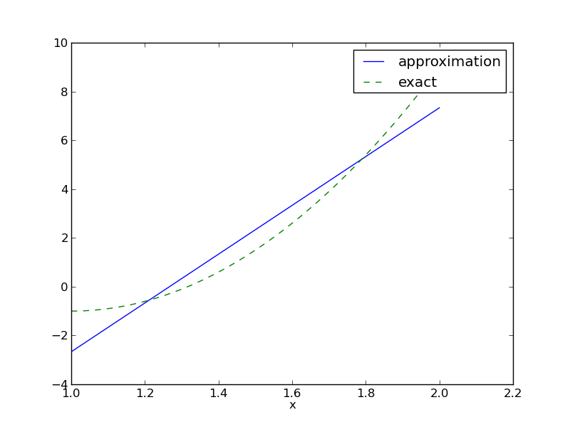
Symboliczna realizacja algorytmu \LSM{}
Problem: napisać program/funkcję, który przeprowadzi obliczenia (obliczenie całek i rozwiązanie układu równań liniowych) i zwróci rozwiązanie postaci n \( u(x)=\sum_jc_j\baspsi_j(x) \).
Niech
- \( f(x) \) będzie dane przez funkcję
sympyoznaczoną symbolemf(funkcję zmiennej (symbolu)x) -
psibędzie listą funkcji \( \sequencei{\baspsi} \), -
Omegabędzie dwuelementową krotką/listą zawierającą początek i koniec przedziału \( \Omega \)
\LSM{} symbolicznie: podejście nr 1
import sympy as sym
def least_squares(f, psi, Omega):
N = len(psi) - 1
A = sym.zeros((N+1, N+1))
b = sym.zeros((N+1, 1))
x = sym.Symbol('x')
for i in range(N+1):
for j in range(i, N+1):
A[i,j] = sym.integrate(psi[i]*psi[j],
(x, Omega[0], Omega[1]))
A[j,i] = A[i,j]
b[i,0] = sym.integrate(psi[i]*f, (x, Omega[0], Omega[1]))
c = A.LUsolve(b)
u = 0
for i in range(len(psi)):
u += c[i,0]*psi[i]
return u, c
\tiny
Spostrzeżenie: macierz układu jest symetryczna, dzięki czemu można zoptymalizować proces wyznaczania jej elementów
- Może się zdażyć, że obliczanie całki się nie powiedzie (skomplikowana funkcja
f) ,sym.integratezwróci wtedy obiekt typusym.Integral. Ulepszenie kodu: sprawdzenie czy takie zdarzenie wystąpiło i ew. obliczenia numeryczne. - Ulepszenie 2: Dodatkowa flaga przy pomocy, której użytkownik może zdecydować bezpośrednio jaki rodzaj całkowania (symboliczny czy numeryczny) ma zostać wykorzystany.
\LSM{} symbolicznie: podejście nr 2
def least_squares(f, psi, Omega, symbolic=True):
...
for i in range(N+1):
for j in range(i, N+1):
integrand = psi[i]*psi[j]
if symbolic:
I = sym.integrate(integrand, (x, Omega[0], Omega[1]))
if not symbolic or isinstance(I, sym.Integral):
# Could not integrate symbolically,
# fall back on numerical integration
integrand = sym.lambdify([x], integrand)
I = sym.mpmath.quad(integrand, [Omega[0], Omega[1]])
A[i,j] = A[j,i] = I
integrand = psi[i]*f
if symbolic:
I = sym.integrate(integrand, (x, Omega[0], Omega[1]))
if not symbolic or isinstance(I, sym.Integral):
integrand = sym.lambdify([x], integrand)
I = sym.mpmath.quad(integrand, [Omega[0], Omega[1]])
b[i,0] = I
...
Prezentacja rozwiązania
Graficzne porównanie \( f \) i \( u \):
def comparison_plot(f, u, Omega, filename='tmp.pdf'):
x = sym.Symbol('x')
# Turn f and u to ordinary Python functions
f = sym.lambdify([x], f, modules="numpy")
u = sym.lambdify([x], u, modules="numpy")
resolution = 401 # no of points in plot
xcoor = linspace(Omega[0], Omega[1], resolution)
exact = f(xcoor)
approx = u(xcoor)
plot(xcoor, approx)
hold('on')
plot(xcoor, exact)
legend(['approximation', 'exact'])
savefig(filename)
Zastosowanie kodu
>>> from approx1D import *
>>> x = sym.Symbol('x')
>>> f = 10*(x-1)**2-1
>>> u, c = least_squares(f=f, psi=[1, x], Omega=[1, 2])
>>> comparison_plot(f, u, Omega=[1, 2])
\vspace{-0.7cm}
Przypadek aproksymacji funkcji \( f\in V \)
- Rozszerzmy zbiór funkcji bazowych przestrezni \( V \) o funkcję \( \baspsi_2=x^2 \), wciąż poszukując przybliżenia dla funkcji \( f=10(x-1)^2-1 \) w przestrzeni \( V \)
- -> przybliżenie paraboli pewną parabolą \ldots
- Rozwiązanie odwzoruje \( f \) ściśle!
>>> from approx1D import *
>>> x = sym.Symbol('x')
>>> f = 10*(x-1)**2-1
>>> u, c = least_squares(f=f, psi=[1, x, x**2], Omega=[1, 2])
>>> print u
10*x**2 - 20*x + 9
>>> print sym.expand(f)
10*x**2 - 20*x + 9
Rozwiązanie przybliżone \( \equiv \) rozwiązanie dokładne, jeśli \( f \in V \)!
Uogólnienie: Przypadek aproksymacji funkcji \( f\in V \)
- A co jeśli baza to \( \psi_i(x)=x^i \) dla \( i=0,\ldots,N=40 \)?
- Wynik funkcji
least_squares: dla \( i>2 \), \( c_i=0 \)
Jeśli \( f\in V \), \LSM{} oraz metoda Galerkina zwrócą \( u=f \).
Dlaczego dla \( f\in V \) aproksymacja jest bezbłędna? Dowód:
Jeśli \( f\in V \), wtedy \( f=\sum_{j\in\If}d_j\baspsi_j \), dla pewnego \( \sequencei{d} \). Wtedy
$$
\begin{equation*}
b_i = (f,\baspsi_i) = \sum_{j\in\If}d_j(\baspsi_j, \baspsi_i)
= \sum_{j\in\If} d_jA_{i,j}
\end{equation*}
$$
a URL \( \sum_j A_{i,j}c_j = b_i \), \( i\in\If \), przedstawia sie:
$$
\begin{equation*}
\sum_{j\in\If}c_jA_{i,j} = \sum_{j\in\If}d_jA_{i,j},\quad i\in\If
\end{equation*}
$$
co oznacza, że \( c_i=d_i \) dla \( i\in\If \), czyli \( u \) jest tożsame z \( f \).
Skończona prezycja obliczeń numerycznych
Poprzednie wnioski -> teoria i obliczenia symboliczne \ldots
Co w przypadku obliczeń numerycznych? -> (rozwiązanie URL macierzami liczb zmiennoprzecinkowych)
\( f \) to wciąż funkcja kwadratowa przybliżana przez
$$ u(x) = c_0 + c_1x + c_2x^2 + c_3x^3 +\cdots + c_Nx^N $$
Oczekiwane: \( c_2=c_3=\cdots=c_N=0 \), skoro \( f\in V \) oznacza \( u=f \).
A naprawdę?
Skończona prezycja obliczeń numerycznych – wyniki
| teoria | sympy | numpy32 | numpy64 |
|---|---|---|---|
| 9 | 9.62 | 5.57 | 8.98 |
| -20 | -23.39 | -7.65 | -19.93 |
| 10 | 17.74 | -4.50 | 9.96 |
| 0 | -9.19 | 4.13 | -0.26 |
| 0 | 5.25 | 2.99 | 0.72 |
| 0 | 0.18 | -1.21 | -0.93 |
| 0 | -2.48 | -0.41 | 0.73 |
| 0 | 1.81 | -0.013 | -0.36 |
| 0 | -0.66 | 0.08 | 0.11 |
| 0 | 0.12 | 0.04 | -0.02 |
| 0 | -0.001 | -0.02 | 0.002 |
- Kolumna 2:
matrixorazlu_solvez bibliotekisympy.mpmath.fp - Kolumna 3:
numpy4B liczby zmiennoprzecinkowe - Kolumna 4:
numpy8B liczby zmiennoprzecinkowe
Złe uwarunkowanie URL - ''liniowa zależność'' w bazie
- Znaczne błędy zaokrągleń rozwiązania numerycznego (!)
- Jednocześnie ''na oko'' (graficzne) rozwiązanie wygląda w porządku (!)
Źródło kłopotów: funkcje \( x^i \) dla bardzo dużych \( i \) stają się praktycznie liniowo zależne
\tiny
|
4 rozwiązania zadania przybliżenia paraboli 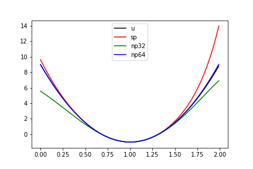 |
Wykresy funkcji \( x^i \) dla \( i=0 \ldots 14 \) 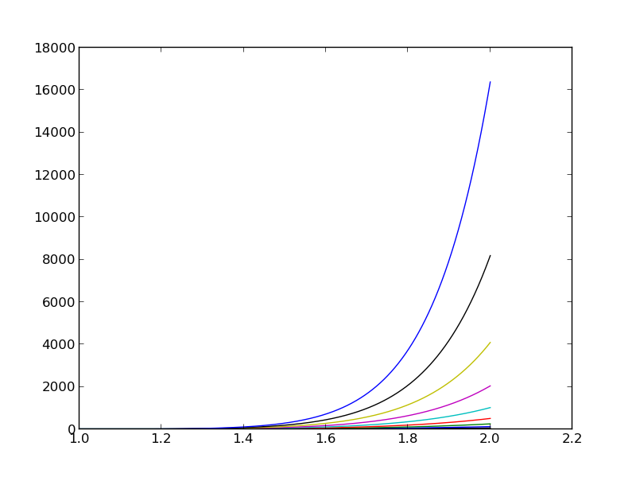 |
Złe uwarunkowanie URL: wnioski
- Prawie liniowa zależność funkcji bazowych skutkuje bliskoosobliwymi macierzami
- macierz prawie osobliwa \( \equiv \) macierz źle uwarunkowana -> problemy w trakcie m.elim. Gaussa
- Baza wielomianów \( 1, x, x^2, x^3, x^4, \ldots \) to ''nienajszczęśliwszy'' wybór
- Istnieją lepsze bazy (nawet wielomianowe), ale im bardziej ortogonalne te bazy są, tym lepiej (\( (\baspsi_i,\baspsi_j)\approx 0 \))
Aproksymacja szeregami Fouriera; problem and code
Aproksymacja funkcji \( f \) szeregiem Fouriera
$$ u(x) = \sum_i a_i\sin i\pi x = \sum_{j=0}^Nc_j\sin((j+1)\pi x) $$
to tylko ''zmiana bazy'':
$$
\begin{equation*}
V = \hbox{span}\,\{ \sin \pi x, \sin 2\pi x,\ldots,\sin (N+1)\pi x\}
\end{equation*}
$$
Obliczenia z wykorzystaniem funkcji least_squares:
N = 3
from sympy import sin, pi
psi = [sin(pi*(i+1)*x) for i in range(N+1)]
f = 10*(x-1)**2 - 1
Omega = [0, 1]
u, c = least_squares(f, psi, Omega)
comparison_plot(f, u, Omega)
Aproksymacja szeregami Fouriera; wykres
L: \( N=3 \), P: \( N=11 \):
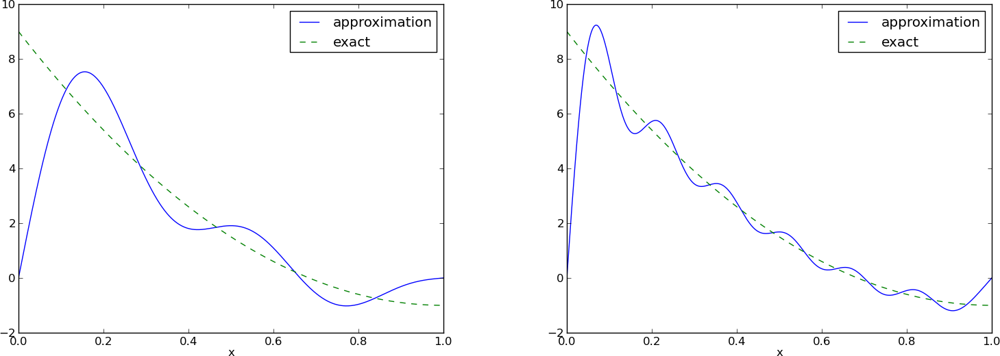
Dla każdej f.bazowej jest \( \baspsi_i(0)=0 \) przez co \( u(0)=0 \neq f(0)=9 \). Podobna sytuacja dla \( x=1 \). Wartości \( u \) na brzegach będą zawsze niepoprawne!
Aproksymacja szeregami Fouriera; ulepszenie
- Znaczna poprawa aproksymacja dla \( N=11 \) wyrazów, pomimo niepożądanych rozbieżności w \( x=0 \) i \( x=1 \)
- Możliwe rozwiązanie: dodać składową, która pozwoli na odwzorowanie właściwych wartości na brzegu
$$ u(x) = {\color{red}f(0)(1-x) + xf(1)} + \sum_{j\in\If} c_j\baspsi_j(x) $$
Dodatkowy wyraz nie tylko zapewnia \( u(0)=f(0) \) oraz \( u(1)=f(1) \), ale także zaskakująco dobrze poprawia jakość aproksymacji! approximation!
Aproksymacja szeregami Fouriera; wyniki
\( N=3 \) vs \( N=11 \):
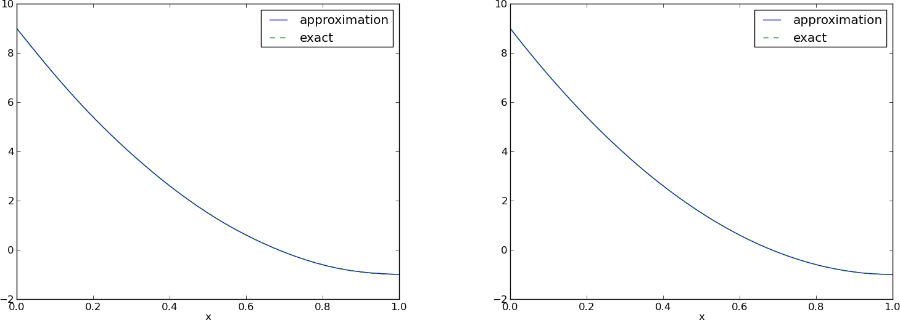
Bazy funkcji ortogonalnych
Zalety wyboru funkcji sinus jako funkcji bazowych:
- funkcje bazowe są parami ortogonalne: \( (\baspsi_i,\baspsi_j)=0 \) (jedynie \( (\baspsi_i,\baspsi_j) \neq 0 \))) dzięki czemu
- macierz \( A_{i,j} \) jest diagonalna, dzięki czemu
- nie ma potrzeby rozwiązywać URL! Rozwiązanie sprowadza się do obliczenia: \( c_i = 2\int_0^1 f(x)\sin ((i+1)\pi x) dx \)
- wynik: rozwinięcie funkcji \( f \) w szereg Fouriera
W ogólnym przypadku, dla baz ortogonalnych, \( A_{i,j} \) jest macierzą diagonalną, a nieznane współczynniki \( c_i \) można łatwo obliczyć:
$$
c_i = \frac{b_i}{A_{i,i}} = \frac{(f,\baspsi_i)}{(\baspsi_i,\baspsi_i)}
$$
Implementacja \LSM{} dla ortogonalnych funkcji bazowych
def least_squares_orth(f, psi, Omega):
N = len(psi) - 1
A = [0]*(N+1)
b = [0]*(N+1)
x = sym.Symbol('x')
for i in range(N+1):
A[i] = sym.integrate(psi[i]**2, (x, Omega[0], Omega[1]))
b[i] = sym.integrate(psi[i]*f, (x, Omega[0], Omega[1]))
c = [b[i]/A[i] for i in range(len(b))]
u = 0
for i in range(len(psi)):
u += c[i]*psi[i]
return u, c
Implementacja \LSM{} dla ortogonalnych funkcji bazowych: całkowanie symboliczne i numeryczne
\footnotesize
- Uwzględnienie parametru sterującego wyborem rodzaju całkowania (argument
symbolic). - W przypadku gdy całkowanie symboliczne zawiedzie (
sym.integratezwracasym.Integral), obliczenia wykonywane numerycznie (w przypadku funkcji sinus nie powinno być problemów z symbolicznym obliczeniem \( \int_\Omega\basphi_i^2dx \))
def least_squares_orth(f, psi, Omega, symbolic=True):
...
for i in range(N+1):
# Diagonal matrix term
A[i] = sym.integrate(psi[i]**2, (x, Omega[0], Omega[1]))
# Right-hand side term
integrand = psi[i]*f
if symbolic:
I = sym.integrate(integrand, (x, Omega[0], Omega[1]))
if not symbolic or isinstance(I, sym.Integral):
print 'numerical integration of', integrand
integrand = sym.lambdify([x], integrand)
I = sym.mpmath.quad(integrand, [Omega[0], Omega[1]])
b[i] = I
...
Metoda kolokacji (interpolacji); idea i teoria
Inny sposób znalezienia przybliżenia \( f(x) \) przez \( u(x)=\sum_jc_j\baspsi_j \):
- Wymuszamy \( u(\xno{i}) = f(\xno{i}) \) w pewnych wybranych punktach \( \sequencei{x} \) (punktach kolokacji)
- \( u \) interpoluje \( f \)
- metoda znana jako metoda kolokacji (interpolacji)
$$ u(\xno{i}) = \sum_{j\in\If} c_j \baspsi_j(\xno{i}) = f(\xno{i})
\quad i\in\If,N
$$
Współczynniki wygenerowanego układu równań to po prostu wartości funkcji, nie ma potrzeby całkowania!
$$
\begin{align}
\sum_{j\in\If} A_{i,j}c_j &= b_i,\quad i\in\If
\tag{7}\\
A_{i,j} &= \baspsi_j(\xno{i})
\tag{8}\\
b_i &= f(\xno{i})
\tag{9}
\end{align}
$$
W ogólnym przypadku macierz wynikowa niesymetryczna: \( \baspsi_j(\xno{i})\neq \baspsi_i(\xno{j}) \)
Metoda kolokacji – implementacja
Zmienna points przechowuje punkty kolokacji
def interpolation(f, psi, points):
N = len(psi) - 1
A = sym.zeros((N+1, N+1))
b = sym.zeros((N+1, 1))
x = sym.Symbol('x')
# Turn psi and f into Python functions
psi = [sym.lambdify([x], psi[i]) for i in range(N+1)]
f = sym.lambdify([x], f)
for i in range(N+1):
for j in range(N+1):
A[i,j] = psi[j](points[i])
b[i,0] = f(points[i])
c = A.LUsolve(b)
u = 0
for i in range(len(psi)):
u += c[i,0]*psi[i](x)
return u
Metoda kolokacji: przybliżenie paraboli funkcją liniową
- Problem: jak wybrać \( \xno{i} \)?
- Wynik zależy od położenia punktów kolokacji!
\( (4/3,5/3) \) vs \( (1,2) \):
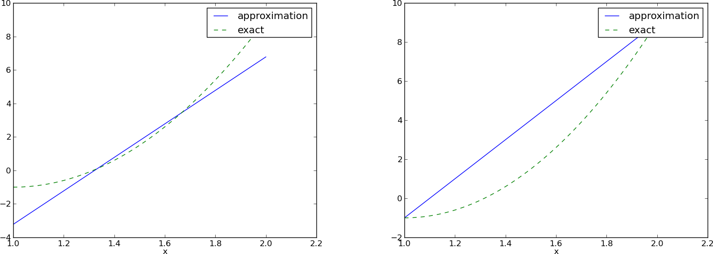
Regresja
- Idea: metoda kolokacji dla \( m \gg N+1 \) punktów
- Problem: Więcej równań niż niewiadomych
- Znana np. ze statystyki regresja

Regresji – nadokreślone URL
$$
u(\xno{i}) = \sum_{j\in\If} c_j \baspsi_j(\xno{i}) = f(\xno{i}),
\quad i=0,1,\ldots,m
$$
$$ \sum_{j\in\If} A_{i,j}c_j = b_i,\quad i=0,1,\ldots,m $$
$$ A_{i,j} = \baspsi_j(\xno{i}),\quad
b_i = f(\xno{i})$$
Rozwiązywanie nadokreślonych URL przy pomocy \LSM
- Jak rozwiązać \( Ac=b \) jeśli jest więcej równań niż niewiadomych?
- Idea: Poszukiwanie rozwiązania minimalizującego \( r=b-Ac \)
- Rezultat: układ równań normalnych \( A^TAc=A^Tb \)
- Zapiszmy układ w postaci \( Bc=d \)
- \( B = A^TA \) już kwadratowe: układ równań o rozmiarach \( (N+1)\times(N+1) \)
$$
\begin{align*}
B_{i,j} &= \sum_k A^T{i,k}A_{k,j} = \sum_k A{k,i}A_{k,j}
=\sum_{k=0}^m\baspsi_i(\xno{k}) \baspsi_j(\xno{k})
\\
d_i &=\sum_k A^T_{i,k}b_k = \sum_k A_{k,i}b_k =\sum_{k=0}^m
\baspsi_i(\xno{k})f(\xno{k})
\end{align*}
$$
Implementacja
def regression(f, psi, points):
N = len(psi) - 1
m = len(points)
# Use numpy arrays and numerical computing
B = np.zeros((N+1, N+1))
d = np.zeros(N+1)
# Wrap psi and f in Python functions rather than expressions
# so that we can evaluate psi at points[i]
x = sym.Symbol('x')
psi_sym = psi # save symbolic expression
psi = [sym.lambdify([x], psi[i]) for i in range(N+1)]
f = sym.lambdify([x], f)
for i in range(N+1):
for j in range(N+1):
B[i,j] = 0
for k in range(m+1):
B[i,j] += psi[i](points[k])*psi[j](points[k])
d[i] = 0
for k in range(m+1):
d[i] += psi[i](points[k])*f(points[k])
c = np.linalg.solve(B, d)
u = sum(c[i]*psi_sym[i] for i in range(N+1))
return u, c
Przykład zastosowania – kod
- Zadanie: Dokonać aproksymacji funkcji \( f(x)=10(x-1)^2-1 \) na przedziale \( \Omega=[1,2] \) przy pomocy funkcji liniowej.
import sympy as sym
x = sym.Symbol('x')
f = 10*(x-1)**2 - 1
psi = [1, x]
Omega = [1, 2]
m_values = [2-1, 8-1, 64-1]
# Create m+3 points and use the inner m+1 points
for m in m_values:
points = np.linspace(Omega[0], Omega[1], m+3)[1:-1]
u, c = regression(f, psi, points)
comparison_plot(f, u, Omega, points=points,
points_legend='%d interpolation points' % (m+1))
Przykład zastosowania – wyniki
$$
\begin{align*}
u(x) &= 10x - 13.2,\quad 2\hbox{ punkty}\\
u(x) &= 10x - 12.7,\quad 8\hbox{ punktw}\\
u(x) &= 10x - 12.7,\quad 64\hbox{ punkty}
\end{align*}
$$
What is the regression method used for?
- It is one of the most dominating methods for approximating data in statistics
- Not so common for approximating functions
- Not much used for solving differential equations
- Recently very popular for statistical uncertainty quantification: approximating the mapping from input parameters to the solution via polynomials and the regression method (called polynomial chaos expansions)
Wielomiany Lagrange'a
Motywacja::
- Metoda kolokacji pozwala uniknąć całkowania
- Dla macierzy diagonalnej \( A_{i,j} = \baspsi_j(\xno{i}) \) rozwiązanie URL jest banalnie proste
Własność wielomianów Lagrange'a \( \baspsi_j \):
$$ \baspsi_i(\xno{j}) =\delta_{ij},\quad \delta_{ij} =
\left\lbrace\begin{array}{ll}
1, & i=j\\
0, & i\neq j
\end{array}\right.
$$
Zatem, \( c_i = f(x_i) \) and
$$
u(x) = \sum_{j\in\If} f(\xno{i})\baspsi_i(x)
$$
- Wielomiany Lagrange'a w połączeniu z metodą kolokacji są niezwykle wygodne
- Często stosowane w \FEM
Wielomiany Lagrange'a – wzór i implementacja
$$
\baspsi_i(x) =
\prod_{j=0,j\neq i}^N
\frac{x-\xno{j}}{\xno{i}-\xno{j}}
= \frac{x-x_0}{\xno{i}-x_0}\cdots\frac{x-\xno{i-1}}{\xno{i}-\xno{i-1}}\frac{x-\xno{i+1}}{\xno{i}-\xno{i+1}}
\cdots\frac{x-x_N}{\xno{i}-x_N}
$$
def Lagrange_polynomial(x, i, points):
p = 1
for k in range(len(points)):
if k != i:
p *= (x - points[k])/(points[i] - points[k])
return p
Wielomiany Lagrange'a – zachęcający przykład zastosowania
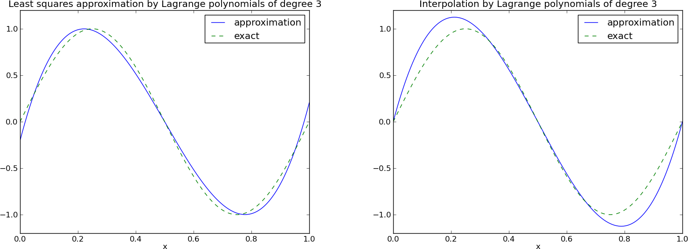
Wielomiany Lagrange'a – mniej zachęcający przykład zastosowania
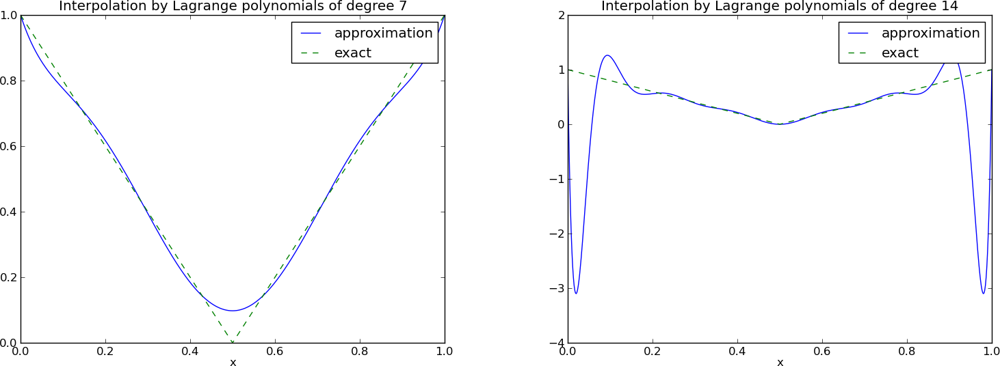
Wielomiany Lagrange'a – efekt Runge'go
12 punktów, dwa wielomiany stopnia 11 (Uwaga!: \( \psi_2(x_2) \neq 0 \) i \( \psi_7(x_7) \neq 0 \)
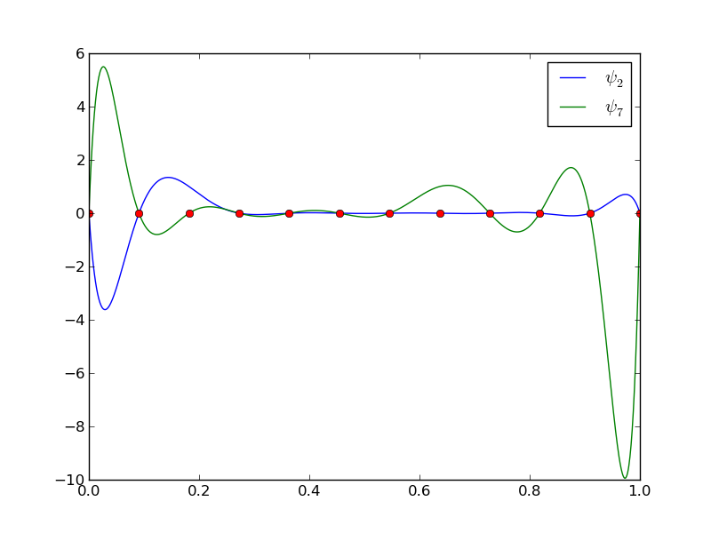
Problem: strong oscillations near the boundaries for larger \( N \) values.
Wielomiany Lagrange'a: jak zapobiec oscylacjom?
Odpowiedni dobór węzłów interpolacji – węzły Czebyszewa:
$$
\xno{i} = \half (a+b) + \half(b-a)\cos\left( \frac{2i+1}{2(N+1)}\pi\right),\quad i=0\ldots,N
$$
na przedziale \( [a,b] \).
Wielomiany Lagrange'a + węzły Czebyszewa
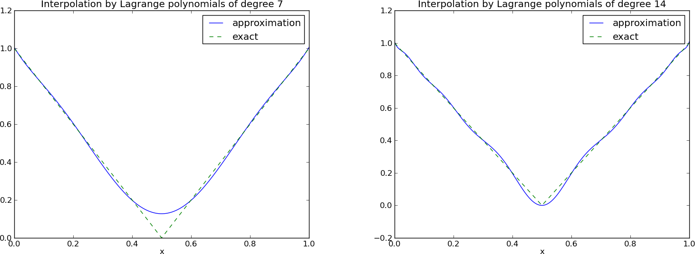
Wielomiany Lagrange'a + węzły Czebyszewa
12 punktów, dwa wielomiany stopnia 11.
Uwaga!: Tym razem węzły są inaczej rozmieszczone!
Mniej oscylacyjny charakter wielomianów w porównaniu do węzłów równomiernie rozmieszczonych.
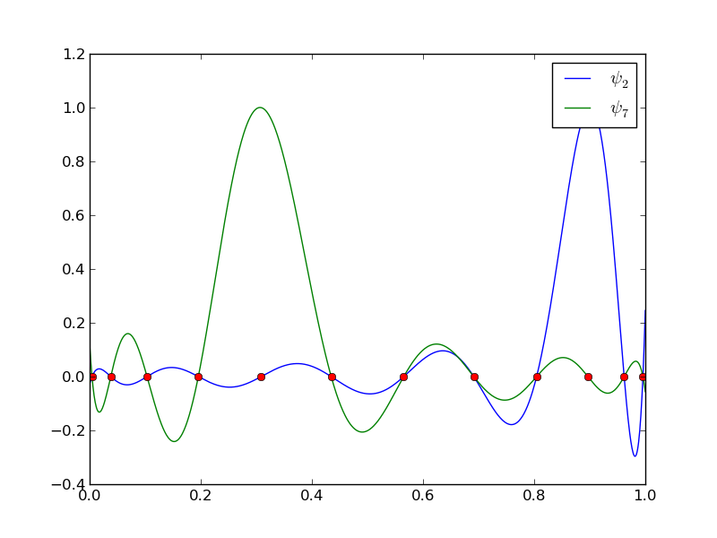
Funkcje bazowe elementów skończonych

Funkcje bazowe o nośniku nieograniczonym: \( \baspsi_i(x) \neq 0 \) prawie w całym przedziale określoności
Nośnik funkcji: domknięcie zbioru argumentów funkcji, dla których ma ona wartość różną od zera (takie iksy dla których \( f(x) \neq 0 \))
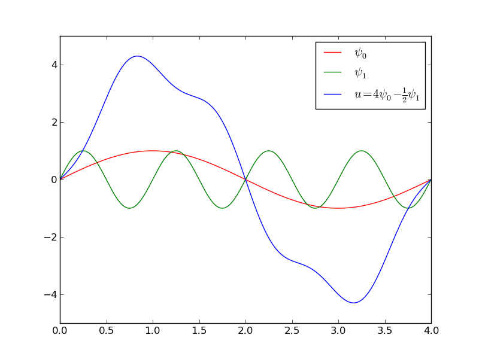
Funkcje bazowe o nośniku ograniczonym – \FEM{}
- Nośnik zwarty (Local support): domknięcie zbioru tych \( x \)-ów, dla których \( \baspsi_i(x) \neq 0 \)
- Typowe dla 1D - funkcje trójkątne (hat-shaped)
- \( u(x) \) zbudowana przy pomocy takich funkcji \( \baspsi_i \) będzie funkcją przedziałami liniową
- Niech symbol \( \basphi_i \) oznacza odtąd tego typu funkcję trójkątną (przyjmijmy również \( \baspsi_i=\basphi_i \))
Kombinacja liniowa funkcji trójkątnych
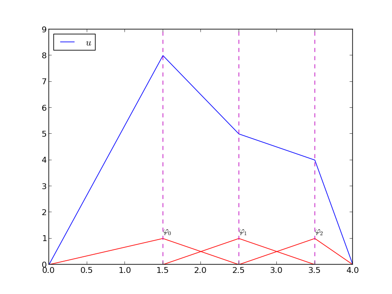
Elementy i węzły
Podzielmy \( \Omega \) na \( N_e \) rozdzielnych podobszarów podobszarów – elementów:
$$
\Omega = \Omega^{(0)}\cup \cdots \cup \Omega^{(N_e)}
$$
Na każdym elemencie wprowadzamy \( N_n \) wezłów (punktów): \( \xno{0},\ldots,\xno{N_n-1} \)
- \( \basphi_i(x) \) – \( i \)-ta funkcja bazowa
- \( \basphi_i=1 \) w węźle \( i \) i \( \basphi_i=0 \) w pozostałych węzłach
- \( \basphi_i \) to wielomian Lagrange'a na każdym elemencie
- Dla węzłów granicznych, leżących w punktach łączących dwa elementy funkcja \( \basphi_i \) jest zbudowane z wielomianów Lagrange'a na obu elementach
Przykład: obszar podzielony na elementy dwuwęzłowe (elementy typu P1)
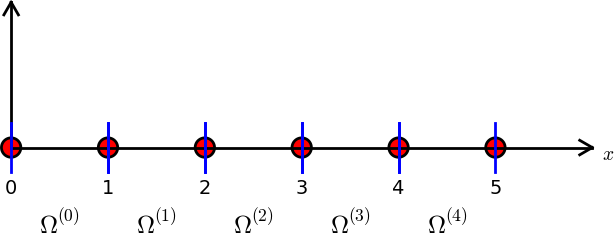
Struktura nodes – współrzędne węzłów.
Struktura elements – numery (globalne) węzłów tworzących
odpowiedni element.
nodes = [0, 1.2, 2.4, 3.6, 4.8, 5]
elements = [[0, 1], [1, 2], [2, 3], [3, 4], [4, 5]]
Przykład: dwie funkcje bazowe na siatce
Przykład: elementy niejednorodne o trzech węzłach (elementy typu P2)
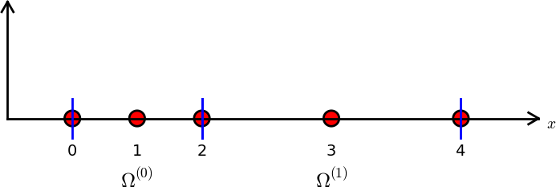
nodes = [0, 0.125, 0.25, 0.375, 0.5, 0.625, 0.75, 0.875, 1.0]
elements = [[0, 1, 2], [2, 3, 4], [4, 5, 6], [6, 7, 8]]
Przykład: funkcje bazowe na siatce (elementy typu P2)
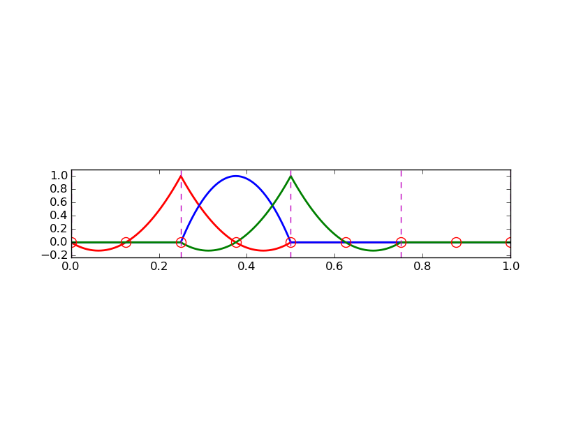
Przykład: elementy typu P3 (o czterech węzłach interpolacji)
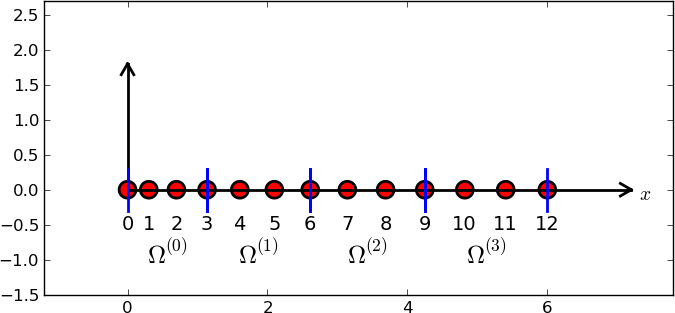
d = 3 # d+1 nodes per element
num_elements = 4
num_nodes = num_elements*d + 1
nodes = [i*0.5 for i in range(num_nodes)]
elements = [[i*d+j for j in range(d+1)] for i in range(num_elements)]
Przykład: funkcje bazowe na siatce (elementy typu P3)
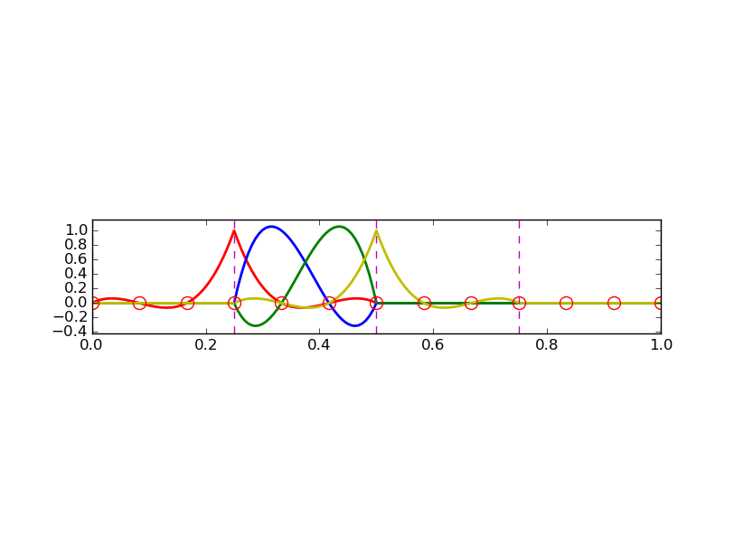
Indeksacja nieregularna
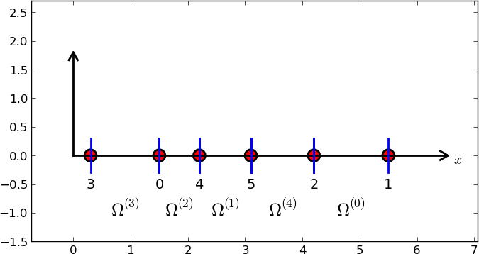
nodes = [1.5, 5.5, 4.2, 0.3, 2.2, 3.1]
elements = [[2, 1], [4, 5], [0, 4], [3, 0], [5, 2]]
Współczynniki \( c_i \) – interpretacja
Ważna własność: \( c_i \) to wartość funkcji \( u \) w węźle \( i \), \( \xno{i} \):
$$
u(\xno{i}) = \sum_{j\in\If} c_j\basphi_j(\xno{i}) =
c_i\basphi_i(\xno{i}) = c_i
$$
Powód: \( \basphi_j(\xno{i}) =0 \) jeśli \( i\neq j \) i \( \basphi_i(\xno{i}) =1 \)
Własności funkcji bazowych
- \( \basphi_i(x) \neq 0 \) jedynie na tych elementach, które zawierają węzeł
- globalnym indeksie \( i \)
- \( \basphi_i(x)\basphi_j(x) \neq 0 \) wtedy i tylko wtedy gdy węzly \( i \) oraz \( j \) leżą na tym samym elemencie
Ponieważ \( A_{i,j}=\int\basphi_i\basphi_j\dx \), większość współczynników macierzy będzie równa zero -> macierze rzadkie
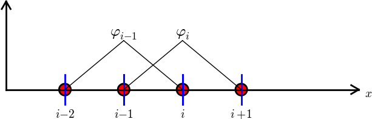
Konstrukcja kwadratowych \( \basphi_i \) (elementy typu P2)
- każdy węzeł elementu ma przypisany wielomian Lagrange'a
- Wielomian o wartości 1 na brzegu elementu należy ''połączyć'' z wielomianem z sąsiedniego elementu, który ma wartość 1 w tym samym punkcie
Liniowe \( \basphi_i \) (elementy typu P1)
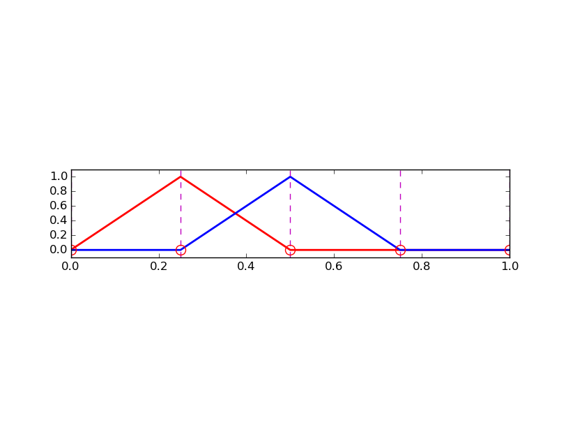
$$
\basphi_i(x) = \left\lbrace\begin{array}{ll}
0, & x < \xno{i-1}\\
(x - \xno{i-1})/h
& \xno{i-1} \leq x < \xno{i}\\
1 -
(x - x_{i})/h,
& \xno{i} \leq x < \xno{i+1}\\
0, & x\geq \xno{i+1}
\end{array}
\right.
$$
Sześcienne \( \basphi_i \) (elementy typu P3)
Generowanie URL
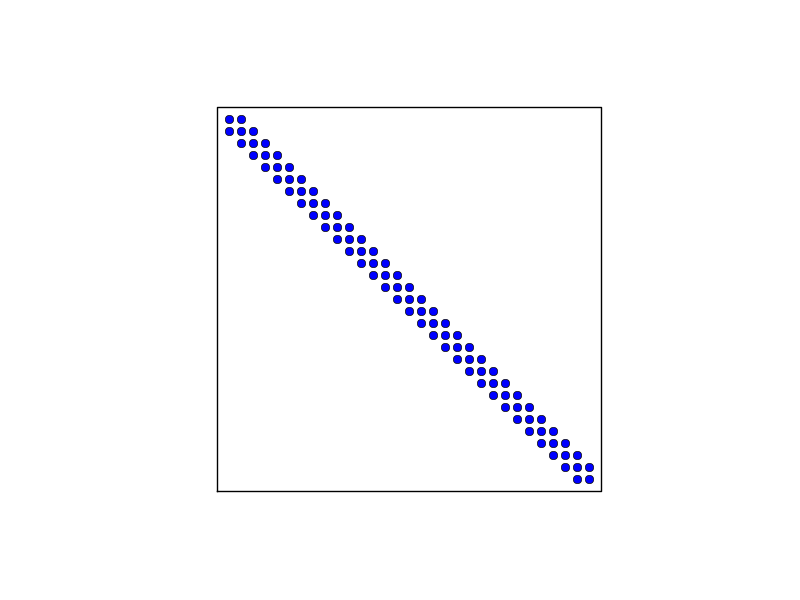
Przykład 1: Obliczenie wartości (niediagonalnego) elementu macierzy
Uproszczenie: elementy jednakowej długości.
\( A_{2,3}=\int_\Omega\basphi_2\basphi_3 dx \): \( \basphi_2\basphi_3\neq 0 \) jedynie na elemencie 2. Dla tego elementu:
$$ \basphi_3(x) = (x-x_2)/h,\quad \basphi_2(x) = 1- (x-x_2)/h$$
$$
A_{2,3} = \int_\Omega \basphi_2\basphi_{3}\dx =
\int_{\xno{2}}^{\xno{3}}
\left(1 - \frac{x - \xno{2}}{h}\right) \frac{x - x_{2}}{h}
\dx = \frac{h}{6}
$$
Przykład 2: Obliczenie wartości (diagonalnego) elementu macierzy
$$ A_{2,2} =
\int_{\xno{1}}^{\xno{2}}
\left(\frac{x - \xno{1}}{h}\right)^2\dx +
\int_{\xno{2}}^{\xno{3}}
\left(1 - \frac{x - \xno{2}}{h}\right)^2\dx
= \frac{2h}{3}
$$
Ogólna postać wzoru na wartość elementu \( A_{ij} \) - rysunek
$$ A_{i,i-1} = \int_\Omega \basphi_i\basphi_{i-1}\dx = \hbox{?}$$
Ogólna postać wzoru na wartość elementu \( A_{ij} \) - obliczenia
$$
\begin{align*}
A_{i,i-1} &= \int_\Omega \basphi_i\basphi_{i-1}\dx\\
&=
\underbrace{\int_{\xno{i-2}}^{\xno{i-1}} \basphi_i\basphi_{i-1}\dx}_{\basphi_i=0} +
\int_{\xno{i-1}}^{\xno{i}} \basphi_i\basphi_{i-1}\dx +
\underbrace{\int_{\xno{i}}^{\xno{i+1}} \basphi_i\basphi_{i-1}\dx}_{\basphi_{i-1}=0}\\
&= \int_{\xno{i-1}}^{\xno{i}}
\underbrace{\left(\frac{x - x_{i}}{h}\right)}_{\basphi_i(x)}
\underbrace{\left(1 - \frac{x - \xno{i-1}}{h}\right)}_{\basphi_{i-1}(x)} \dx =
\frac{h}{6}
\end{align*}
$$
- \( A_{i,i+1}=A_{i,i-1} \) ze względu na symetrię
- \( A_{i,i}=2h/3 \) (obliczenia jak w przypadku \( A_{2,2} \)), z wyjątkiem:
- \( A_{0,0}=A_{N,N}=h/3 \) (całka tylko na jednym elemencie)
Obliczenia dla prawej strony równania
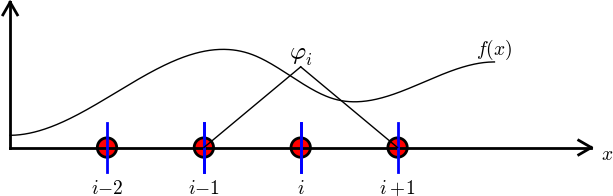
$$
b_i = \int_\Omega\basphi_i(x)f(x)\dx
= \int_{\xno{i-1}}^{\xno{i}} \frac{x - \xno{i-1}}{h} f(x)\dx
+ \int_{x_{i}}^{\xno{i+1}} \left(1 - \frac{x - x_{i}}{h}\right) f(x)
\dx
$$
Do dalszych obliczeń potrzebna konkretna postać \( f(x) \) ...
Przykład: rozwiązanie dla obszaru dwu-elementowego – URL i rozwiązanie
- \( f(x)=x(1-x) \) na \( \Omega=[0,1] \)
- Dwa elementy o jednakowej długości: \( [0,0.5] \) oraz \( [0.5,1] \)
$$
\begin{equation*}
A = \frac{h}{6}\left(\begin{array}{ccc}
2 & 1 & 0\\
1 & 4 & 1\\
0 & 1 & 2
\end{array}\right),\quad
b = \frac{h^2}{12}\left(\begin{array}{c}
2 - 3h\\
12 - 14h\\
10 -17h
\end{array}\right)
\end{equation*}
$$
$$
\begin{equation*} c_0 = \frac{h^2}{6},\quad c_1 = h - \frac{5}{6}h^2,\quad
c_2 = 2h - \frac{23}{6}h^2
\end{equation*}
$$
Przykład: rozwiązanie dla obszaru dwu-elementowego – rozwiązanie-rysunek
$$
\begin{equation*} u(x)=c_0\basphi_0(x) + c_1\basphi_1(x) + c_2\basphi_2(x)\end{equation*}
$$

Przykład: Rozwiązanie dla obszaru 4-elementowego – rozwiązanie-rysunek
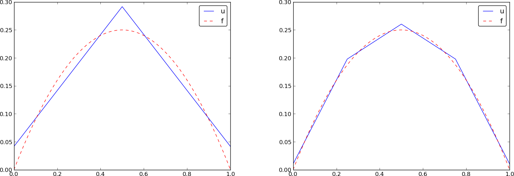
Przykład: elementy typu P2
Przypomnienie: jeśli \( f\in V \), \( u \) odtworzy rozwiązanie bezbłędnie. Jeśli \( f \) to parabola, dowolna siatka elementów typu P2 (1 lub wiele elementów) sprawi wygeneruje \( u=f \). To samo dotyczyć będzie elementów typu P3, P4, itd., ponieważ one wszystkie potrafią odtworzyć wielomian 2. stopnia bezbłędnie.
Generowanie macierzy globalnej - logika obliczeń
(ang. assemble - gromadzić, składać, zbierać)
assembling, assemblacja?
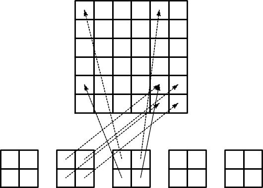
Całkowanie z perspektywy elementu
$$
A_{i,j} = \int_\Omega\basphi_i\basphi_jdx =
\sum_{e} \int_{\Omega^{(e)}} \basphi_i\basphi_jdx,\quad
A^{(e)}_{i,j}=\int_{\Omega^{(e)}} \basphi_i\basphi_jdx
$$
Ważne spostrzeżenia:
- \( A^{(e)}_{i,j}\neq 0 \) wtedy i tylko wtedy gdy węzeły \( i \) oraz \( j \) leżą na tym samym elemencie \( e \) (w przeciwnym wypadku nośniki funkcji to zbiory rozłączne)
- Wszystkie niezerowe współczynniki danego elementu \( A^{(e)}_{i,j} \) tworzą lokalną macierz dla danego elementu (element matrix)
- ''Wkład'' w macierz lokalną elementu mają wyłącznie funkcje bazowe związane z węzłami leżącymi na tym elemencie
- Wygodne rozwiązanie: wprowadzenie indeksacji lokalnej węzłów leżących na danym elemencie: \( 0,1,\ldots,d \)
\vspace{-0.7cm}
Macierz elementów: indeksacja lokalna/indeksacja globalna
$$
\tilde A^{(e)} = \{ \tilde A^{(e)}_{r,s}\},\quad
\tilde A^{(e)}_{r,s} =
\int_{\Omega^{(e)}}\basphi_{q(e,r)}\basphi_{q(e,s)}dx,
\quad r,s\in\Ifd=\{0,\ldots,d\}
$$
|
|
Przykład: assembling macierzy dla kolejno ponumerowanych elementów P1
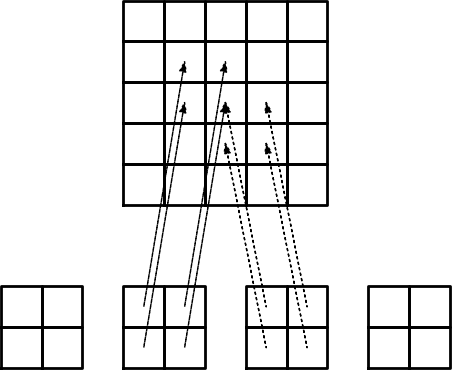
TODO
Przykład: assembling macierzy dla kolejno ponumerowanych elementów P3
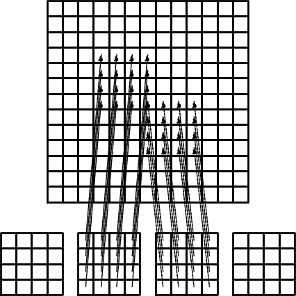
TODO
Przykład: assembling macierzy dla nieregularnej siatki elementów P1
TODO
Assembling prawej strony układu
$$
b_i = \int_\Omega f(x)\basphi_i(x)dx =
\sum_{e} \int_{\Omega^{(e)}} f(x)\basphi_i(x)dx,\quad
b^{(e)}_{i}=\int_{\Omega^{(e)}} f(x)\basphi_i(x)dx
$$
Ważne spostrzeżenia:
- \( b_i^{(e)}\neq 0 \) wtedy i tylko wtedy gdy węzeł globalny \( i \) leży na danym elemencie \( e \) (w przeciwnym przypadku \( \basphi_i=0 \))
- \( d+1 \) niezerowych wartości \( b_i^{(e)} \) może być zgromadzonych w lokalnym wektorze elementu e. \( \tilde b_r^{(e)}=\{ \tilde b_r^{(e)}\} \), \( r\in\Ifd \)
Assembling:
$$
b_{q(e,r)} := b_{q(e,r)} + \tilde b^{(e)}_{r},\quad
r\in\Ifd
$$
Transformacja współrzędnych globalnych do współrzędnych unormowanych
Normalizacja współrzędnych położenia:
Zamiast całkować w granicach \( [x_L, x_R] \)
$$
\begin{equation*} \tilde A^{(e)}_{r,s} = \int_{\Omega^{(e)}}\basphi_{q(e,r)}(x)\basphi_{q(e,s)}(x)dx
= \int_{x_L}^{x_R}\basphi_{q(e,r)}(x)\basphi_{q(e,s)}(x)dx
\end{equation*}
$$
można transformować przedział \( [x_L, x_R] \) na przedział unormowany \( [-1,1] \) o współrzędnej lokalnej \( X \)
Transformacja liniowa \( X\in [-1,1] \) w \( x\in [x_L,x_R] \)
(Transformacja afiniczna)
$$
x = \half (x_L + x_R) + \half (x_R - x_L)X
$$
inaczej
$$
x = x_m + {\half}hX, \qquad x_m=(x_L+x_R)/2,\quad h=x_R-x_L
$$
\scriptsize
Transformacja odwrotna:
$$
X = \frac{2 x + (x_L + x_R)}{(x_R - x_L)}
$$
Transformacja całki
\small
Zmiana granic całkowania -> całkowanie na przedziale unormowanym: podstawienie \( x(X) \) w miejsce \( x \).
Lokalne funkcje bazowe we współrzędnych unormowanych:
\vspace{-0.2cm}
$$
\refphi_r(X) = \basphi_{q(e,r)}(x(X))
$$
$$
\begin{array}{c}
x = \half (x_L + x_R) + \half (x_R - x_L)X \\
\downarrow \\
dx = \half (x_R - x_L) dX
\end{array}
$$
\vspace{-0.5cm}
$$
\tilde A^{(e)}_{r,s}
=
\int_{\Omega^{(e)}}\basphi_{q(e,r)}(x)\basphi_{q(e,s)}(x)dx
=
\int\limits_{-1}^1 \refphi_r(X)\refphi_s(X)\underbrace{\frac{dx}{dX}}_{\det J= h/2}dX $$
\vspace{-1.0cm}
$$
\tilde A^{(e)}_{r,s}
=
\int\limits_{-1}^1 \refphi_r(X)\refphi_s(X)\det J\,dX
$$
\vspace{-0.2cm}
$$
\tilde b^{(e)}_{r} = \int_{\Omega^{(e)}}f(x)\basphi_{q(e,r)}(x)dx
= \int\limits_{-1}^1 f(x(X))\refphi_r(X)\det J\,dX
$$
Zalety całkowania na przedziale unormowanym
- Całkowanie zawsze w tych samych granicach całkowania \( [-1,1] \)
- Potrzebne wzory tylko dla \( \refphi_r(X) \) na jednym elemencie (brak funkcji definiowanych na przedziałach (piecewise polynomial))
- Funkcja \( \refphi_r(X) \) jest taka sama dla wszystkich elementów niezależnie od ich położenia i rozmiarów (długości). Długość odcinka jest uwzględniona poprzez jakobian \( \det J \)
Funkcje bazowe P1 na elemencie unormowanym
$$
\begin{align}
\refphi_0(X) &= \half (1 - X)
\tag{10}\\
\refphi_1(X) &= \half (1 + X)
\tag{11}
\end{align}
$$
(proste funkcje wielomianowe zamiast definicji funkcji na podprzedziałach
Funkcje bazowe P2 na elemencie unormowanym
$$
\begin{align}
\refphi_0(X) &= \half (X-1)X
\tag{12}\\
\refphi_1(X) &= 1 - X^2
\tag{13}\\
\refphi_2(X) &= \half (X+1)X
\tag{14}
\end{align}
$$
Łatwość wygenerowania elementów dowolnego rzędu... Jak?
Sposoby znalezienia wzorów na funkcje bazowe
- Transformacja globalnych funkcji bazowych \( \basphi_i(x) \) na element unormowany ze współrzędną \( X \)
- Obliczenie \( \refphi_r(X) \)
- dla zadanego stopnia \( d \) szukamy wielomianów opartych o węzły wewnątrz przedziału \( [-1,1] \) o własności
- \( \refphi_r(X)=1 \) w węźle \( r \)
- \( \refphi_r(X)=0 \) we wszystkich pozostałych \( d \) węzłach
- Wykorzystanie wzoru interpolacyjnego Lagrange'a
Całkowanie po elemencie unormowanym - lokalna macierz
\small
Założenie: elementy typu P1, oraz funkcja \( f(x)=x(1-x) \).
$$
\begin{align}
\tilde A^{(e)}_{0,0}
&= \int_{-1}^1 \refphi_0(X)\refphi_0(X)\frac{h}{2} dX\nonumber\\
&=\int_{-1}^1 \half(1-X)\half(1-X) \frac{h}{2} dX =
\frac{h}{8}\int_{-1}^1 (1-X)^2 dX = \frac{h}{3}
\tag{15}\\
\tilde A^{(e)}_{1,0}
&= \int_{-1}^1 \refphi_1(X)\refphi_0(X)\frac{h}{2} dX\nonumber\\
&=\int_{-1}^1 \half(1+X)\half(1-X) \frac{h}{2} dX =
\frac{h}{8}\int_{-1}^1 (1-X^2) dX = \frac{h}{6}
\tag{16}\\
\tilde A^{(e)}_{0,1} &= \tilde A^{(e)}_{1,0}
\tag{17}\\
\tilde A^{(e)}_{1,1}
&= \int_{-1}^1 \refphi_1(X)\refphi_1(X)\frac{h}{2} dX\nonumber\\
&=\int_{-1}^1 \half(1+X)\half(1+X) \frac{h}{2} dX =
\frac{h}{8}\int_{-1}^1 (1+X)^2 dX = \frac{h}{3}
\tag{18}
\end{align}
$$
Całkowanie po elemencie unormowanym - wektor prawej strony
$$
\begin{align}
\tilde b^{(e)}_{0}
&= \int_{-1}^1 f(x(X))\refphi_0(X)\frac{h}{2} dX\nonumber\\
&= \int_{-1}^1 (x_m + \half hX)(1-(x_m + \half hX))
\half(1-X)\frac{h}{2} dX \nonumber\\
&= - \frac{1}{24} h^{3} + \frac{1}{6} h^{2} x_{m} - \frac{1}{12} h^{2} - \half h x_{m}^{2} + \half h x_{m}
\tag{19}\\
\tilde b^{(e)}_{1}
&= \int_{-1}^1 f(x(X))\refphi_1(X)\frac{h}{2} dX\nonumber\\
&= \int_{-1}^1 (x_m + \half hX)(1-(x_m + \half hX))
\half(1+X)\frac{h}{2} dX \nonumber\\
&= - \frac{1}{24} h^{3} - \frac{1}{6} h^{2} x_{m} + \frac{1}{12} h^{2} -
\half h x_{m}^{2} + \half h x_{m}
\tag{20}
\end{align}
$$
\( x_m \): element midpoint.
Obliczenia symboliczne zamiast żmudnego liczenia na kartce...
>>> import sympy as sym
>>> x, x_m, h, X = sym.symbols('x x_m h X')
>>> sym.integrate(h/8*(1-X)**2, (X, -1, 1))
h/3
>>> sym.integrate(h/8*(1+X)*(1-X), (X, -1, 1))
h/6
>>> x = x_m + h/2*X
>>> b_0 = sym.integrate(h/4*x*(1-x)*(1-X), (X, -1, 1))
>>> print b_0
-h**3/24 + h**2*x_m/6 - h**2/12 - h*x_m**2/2 + h*x_m/2
Implementacja
- Funkcje przedstawione na kolejnych slajdach znajdują sie w module
fe_approx1D.py - Przedstawione funkcje działają w trybie symbolicznym, jak i numerycznym
- Kod zawiera wszystkie kroku obliczeń elementami skończonymi.
Generowanie funkcji bazowych na przedziale unormowanymi
Niech \( \refphi_r(X) \) będzie wielomianem Lagrange'a stopnia d:
import sympy as sym
import numpy as np
def phi_r(r, X, d):
if isinstance(X, sym.Symbol):
h = sym.Rational(1, d) # node spacing
nodes = [2*i*h - 1 for i in range(d+1)]
else:
# assume X is numeric: use floats for nodes
nodes = np.linspace(-1, 1, d+1)
return Lagrange_polynomial(X, r, nodes)
def Lagrange_polynomial(x, i, points):
p = 1
for k in range(len(points)):
if k != i:
p *= (x - points[k])/(points[i] - points[k])
return p
def basis(d=1):
"""Return the complete basis."""
X = sym.Symbol('X')
phi = [phi_r(r, X, d) for r in range(d+1)]
return phi
Obliczanie współczynników macierzy
def element_matrix(phi, Omega_e, symbolic=True):
n = len(phi)
A_e = sym.zeros((n, n))
X = sym.Symbol('X')
if symbolic:
h = sym.Symbol('h')
else:
h = Omega_e[1] - Omega_e[0]
detJ = h/2 # dx/dX
for r in range(n):
for s in range(r, n):
A_e[r,s] = sym.integrate(phi[r]*phi[s]*detJ, (X, -1, 1))
A_e[s,r] = A_e[r,s]
return A_e
Przykład: Obliczenia macierzy współczynników: symbolicznie vs numerycznie
>>> from fe_approx1D import *
>>> phi = basis(d=1)
>>> phi
[1/2 - X/2, 1/2 + X/2]
>>> element_matrix(phi, Omega_e=[0.1, 0.2], symbolic=True)
[h/3, h/6]
[h/6, h/3]
>>> element_matrix(phi, Omega_e=[0.1, 0.2], symbolic=False)
[0.0333333333333333, 0.0166666666666667]
[0.0166666666666667, 0.0333333333333333]
Obliczenia współczynników wektora prawej strony
def element_vector(f, phi, Omega_e, symbolic=True):
n = len(phi)
b_e = sym.zeros((n, 1))
# Make f a function of X
X = sym.Symbol('X')
if symbolic:
h = sym.Symbol('h')
else:
h = Omega_e[1] - Omega_e[0]
x = (Omega_e[0] + Omega_e[1])/2 + h/2*X # mapping
f = f.subs('x', x) # substitute mapping formula for x
detJ = h/2 # dx/dX
for r in range(n):
b_e[r] = sym.integrate(f*phi[r]*detJ, (X, -1, 1))
return b_e
Zwróć uwagę na f.subs('x', x) -> podstawienie \( x(X) \) za x we formule na f
(od teraz f jest funkcją \( f(X) \))
Powrót do całkowania numerycznego w razie niepowodzenia całkowania symbolicznego \( \int f\refphi_r dx \)
- Macierz lewej strony: tylko wielomiany ->
sympyzawsze da radę - Wektor prawej strony: całkowanie \( \int f\refphi \dx \) może się nie powieść (
sympyzwróci obiekt typuIntegralzamiast liczby)
def element_vector(f, phi, Omega_e, symbolic=True):
...
I = sym.integrate(f*phi[r]*detJ, (X, -1, 1)) # try...
if isinstance(I, sym.Integral):
h = Omega_e[1] - Omega_e[0] # Ensure h is numerical
detJ = h/2
integrand = sym.lambdify([X], f*phi[r]*detJ)
I = sym.mpmath.quad(integrand, [-1, 1])
b_e[r] = I
...
Assembling URL i rozwiązanie
def assemble(nodes, elements, phi, f, symbolic=True):
N_n, N_e = len(nodes), len(elements)
zeros = sym.zeros if symbolic else np.zeros
A = zeros((N_n, N_n))
b = zeros((N_n, 1))
for e in range(N_e):
Omega_e = [nodes[elements[e][0]], nodes[elements[e][-1]]]
A_e = element_matrix(phi, Omega_e, symbolic)
b_e = element_vector(f, phi, Omega_e, symbolic)
for r in range(len(elements[e])):
for s in range(len(elements[e])):
A[elements[e][r],elements[e][s]] += A_e[r,s]
b[elements[e][r]] += b_e[r]
return A, b
Rozwiązanie URL
if symbolic:
c = A.LUsolve(b) # sympy arrays, symbolic Gaussian elim.
else:
c = np.linalg.solve(A, b) # numpy arrays, numerical solve
Uwaga: obliczanie współczynników macierzy A, b oraz rozwiązanie URL
A.LUsolve(b) może być baaardzo czasochłonne\ldots
Przykład: generowanie macierzy symbolicznie
>>> h, x = sym.symbols('h x')
>>> nodes = [0, h, 2*h]
>>> elements = [[0, 1], [1, 2]]
>>> phi = basis(d=1)
>>> f = x*(1-x)
>>> A, b = assemble(nodes, elements, phi, f, symbolic=True)
>>> A
[h/3, h/6, 0]
[h/6, 2*h/3, h/6]
[ 0, h/6, h/3]
>>> b
[ h**2/6 - h**3/12]
[ h**2 - 7*h**3/6]
[5*h**2/6 - 17*h**3/12]
>>> c = A.LUsolve(b)
>>> c
[ h**2/6]
[12*(7*h**2/12 - 35*h**3/72)/(7*h)]
[ 7*(4*h**2/7 - 23*h**3/21)/(2*h)]
Przykład: generowanie macierzy numerycznie
>>> nodes = [0, 0.5, 1]
>>> elements = [[0, 1], [1, 2]]
>>> phi = basis(d=1)
>>> x = sym.Symbol('x')
>>> f = x*(1-x)
>>> A, b = assemble(nodes, elements, phi, f, symbolic=False)
>>> A
[ 0.166666666666667, 0.0833333333333333, 0]
[0.0833333333333333, 0.333333333333333, 0.0833333333333333]
[ 0, 0.0833333333333333, 0.166666666666667]
>>> b
[ 0.03125]
[0.104166666666667]
[ 0.03125]
>>> c = A.LUsolve(b)
>>> c
[0.0416666666666666]
[ 0.291666666666667]
[0.0416666666666666]
Struktura macierzy współczynników
>>> d=1; N_e=8; Omega=[0,1] # 8 linear elements on [0,1]
>>> phi = basis(d)
>>> f = x*(1-x)
>>> nodes, elements = mesh_symbolic(N_e, d, Omega)
>>> A, b = assemble(nodes, elements, phi, f, symbolic=True)
>>> A
[h/3, h/6, 0, 0, 0, 0, 0, 0, 0]
[h/6, 2*h/3, h/6, 0, 0, 0, 0, 0, 0]
[ 0, h/6, 2*h/3, h/6, 0, 0, 0, 0, 0]
[ 0, 0, h/6, 2*h/3, h/6, 0, 0, 0, 0]
[ 0, 0, 0, h/6, 2*h/3, h/6, 0, 0, 0]
[ 0, 0, 0, 0, h/6, 2*h/3, h/6, 0, 0]
[ 0, 0, 0, 0, 0, h/6, 2*h/3, h/6, 0]
[ 0, 0, 0, 0, 0, 0, h/6, 2*h/3, h/6]
[ 0, 0, 0, 0, 0, 0, 0, h/6, h/3]
Uwaga (zadanie domowe): Odtworzenie tego powyższego wyniku przy pomocy ''obliczeń ołówkowych'' naprawdę pomoże w zrozumieniu materiału.
Wynik w przypadku ogólnym (\( N \) jednakowych elementów)
- Macierz rzadka -> większość współczynników to zera
- Przykład dla elementów typu P1, siatka regularna
$$
A = \frac{h}{6}
\left(
\begin{array}{cccccccccc}
2 & 1 & 0
&\cdots & \cdots & \cdots & \cdots & \cdots & 0 \\
1 & 4 & 1 & \ddots & & & & & \vdots \\
0 & 1 & 4 & 1 &
\ddots & & & & \vdots \\
\vdots & \ddots & & \ddots & \ddots & 0 & & & \vdots \\
\vdots & & \ddots & \ddots & \ddots & \ddots & \ddots & & \vdots \\
\vdots & & & 0 & 1 & 4 & 1 & \ddots & \vdots \\
\vdots & & & & \ddots & \ddots & \ddots &\ddots & 0 \\
\vdots & & & & &\ddots & 1 & 4 & 1 \\
0 &\cdots & \cdots &\cdots & \cdots & \cdots & 0 & 1 & 2
\end{array}
\right)
$$
Macierz rzadka dla elementów typu P2 (siatka regularna)
$$
A = \frac{h}{30}
\left(
\begin{array}{ccccccccc}
4 & 2 & - 1 & 0
& 0 & 0 & 0 & 0 & 0\\
2 & 16 & 2
& 0 & 0 & 0 & 0 & 0 & 0\\- 1 & 2 &
8 & 2 & - 1 & 0 & 0 & 0 & 0\\
0 & 0 & 2 & 16 & 2 & 0 & 0 & 0 & 0\\
0 & 0 & - 1 & 2 & 8 & 2 & - 1 & 0 & 0\\
0 & 0 & 0 & 0 & 2 & 16 & 2 & 0 & 0\\
0 & 0 & 0 & 0 & - 1 & 2 & 8 & 2 & - 1
\\0 & 0 & 0 & 0 & 0 & 0 &
2 & 16 & 2\\0 & 0 & 0 & 0 & 0
& 0 & - 1 & 2 & 4
\end{array}
\right)
$$
Macierz rzadka dla siatek regularnych/indeksowanych losowo dla elementów P1
- Po lewej: węzły i elementy ideksowane od lewej do prawej
- Po prawej: węzły i elementy indeksowane ''losowo''
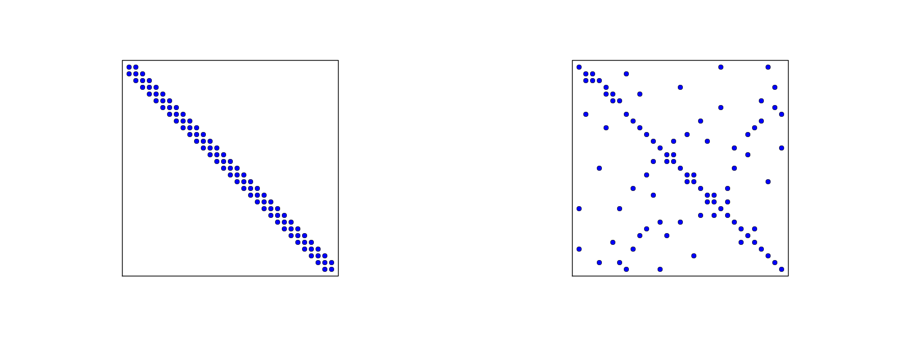
Macierz rzadka dla siatek regularnych/indeksowanych losowo dla elementów P3
- Po lewej: węzły i elementy ideksowane od lewej do prawej
- Po prawej: węzły i elementy indeksowane ''losowo''

Macierze rzadkie – podsumowanie
Postać specyficznych macierzy \( A_{i,j} \):
- Elementy P1: 3 niezerowe elementy w wierszu
- Elementy P2: 5 niezerowe elementy w wierszu
- Elementy P3: 7 niezerowe elementy w wierszu
Wskazówki:
- Należy używać specjalne techniki przechowywania takich macierzy w pamięci i specjalnych solverów dla macierzy rzadkich
- W Pythonie: pakiet
scipy.sparse
Przykład: przybliżenie funkcji \( f\sim x^9 \) elementami różnego typu; kod
Zadanie: Porównać rozwiązanie zadania przybliżenia funkcji \( f(x) \) przy pomocy siatki \( N_e \) elementów skończonych o funkcjach bazowych rzędu \( d \).
import sympy as sym
from fe_approx1D import approximate
x = sym.Symbol('x')
approximate(f=x*(1-x)**8, symbolic=False, d=1, N_e=4)
approximate(f=x*(1-x)**8, symbolic=False, d=2, N_e=2)
approximate(f=x*(1-x)**8, symbolic=False, d=1, N_e=8)
approximate(f=x*(1-x)**8, symbolic=False, d=2, N_e=4)
Przykład: przybliżenie funkcji \( f\sim x^9 \) elementami różnego typu; rysunki
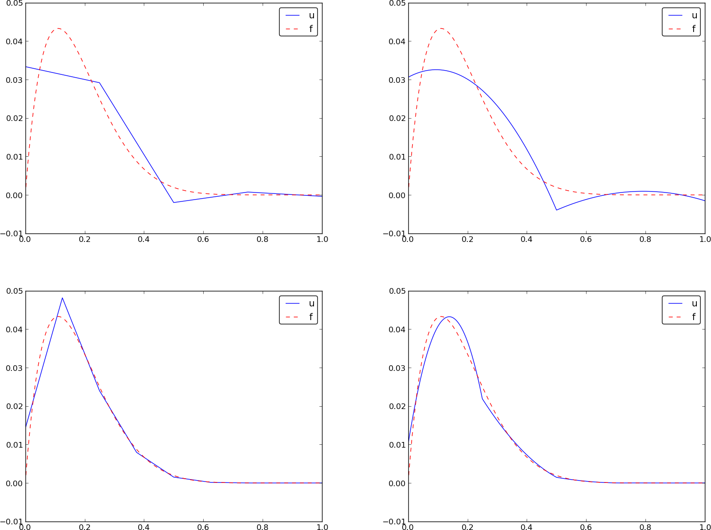
Ograniczenia zaprezentowanego podejścia elementów skończonych
Najczęstsza interpretacja:
- Węzły: punkty potrzebne do zdefiniowania \( \basphi_i \) i obliczania
wartości \( u \) (wymagane do geometrii i aproksymacji funkcji)
- Elementy: podobszary (zawierające kilka węzłów)
Problem:
- węzły na brzegu potrzebne przy warunkach brzegowych, a nie zawsze tak musi być dla szczególnych rodzajów interpolacji (np. elementy stałe)
- Trzeba wymyśleć coś lepszego...
Uogólnienie koncepcji elementu skończonego (komórki, wierzchołki, węzły, stopnie swobody)
- Rozdzielenie aproksymacji geometrii (obszaru) od aproksymacji funkcji ''nad'' obszarem
- Nowe pojęcia: komórka (ang. cell) – podobszar, element, kawałek obszaru
- Komórka zbudowana jest z wierzchołków (ang. vertices <- vertex) – (krańców przedziału w 1D)
- Węzły (ang. nodes) p- punkty, w których należy wyznaczyć wartość poszukiwanej funkcji (nie muszą pokrywać się z wierzchołkami!, ale mogą\ldots)
- Stopnie swobody (ang. degrees of freedom)
– wielkości reprezentowane przez \( c_j \) (niewiadome w URL) -> najczęściej: wartości funkcji w węźle \( \sum_{j\in\If} c_j \basphi_j(\xno{i}) = c_i \)
wierzchołki -> komórki -> interpolacja geometrii
węzły, stopnie swobody -> interpolacja funkcji
Pojęcie elementu skończonego
- komórka odniesienia z unormowanym, lokalnym układem współrzędnych
- zbiór funkcji bazowych \( \refphi_r \) dla komórki
- zbiór stopni swobody (t.j. wartości funkcji), jednoznacznie wyznaczający funkcje bazowe, dobrane tak aby \( \refphi_r=1 \) dla \( r \)-tego stopnia swobody oraz \( \refphi_r=0 \) dla wszystkich pozostałych stopni swobody
- odwzorowanie (ang. mapping) pomiędzy lokalną a globalną indeksacją (transformacja numeracji) stopni swobody (odwzorowanie dof – dof map)
- odwzorowanie komórki unormowanej na komórkę rzeczywistego obszaru (w 1D: \( [-1,1]\ \Rightarrow\ [x_L,x_R] \))
Struktury danych: vertices, cells, dof_map
- Współrzędne wierzchołków komórek:
vertices(równoważne strukturzenodesdla elementów P1) - Wierzchołki dla elementów (komórek):
cells[e][r]numer globalny dla wierchołkarelementue(równoważne strukturzeelementsdla elementów typu P1) -
dof_map[e,r]odwzorowanie lokalnego indeksu stopnia swobodyrelementuena number globalny (równoważne strukturzeelementsdla elementów typu Pd)
W trakcie assemblingu należy skorzystać ze struktury dof_map:
A[dof_map[e][r], dof_map[e][s]] += A_e[r,s]
b[dof_map[e][r]] += b_e[r]
|
|
vertices = [0, 0.4, 1]
cells = [[0, 1], [1, 2]]
dof_map = [[0, 1, 2], [2, 3, 4]]
|
Przykład: elementy P0
Przykład: Ta sama siatka, ale \( u \) to funkcja stała na każdej komórce (przedziałami stała) -> elementy typu P0.
Te same struktury vertices i cells, ale dodatkowo
dof_map = [[0], [1]]
Można traktować te elementy jak elementy z interpolacją opartą na węźle znajdującym się pośrodku elementu.
Od tej pory będziemy wykorzystywać struktury cells, vertices, i dof_map.
Szkielet programu
# Use modified fe_approx1D module
from fe_approx1D_numint import *
x = sym.Symbol('x')
f = x*(1 - x)
N_e = 10
# Create mesh with P3 (cubic) elements
vertices, cells, dof_map = mesh_uniform(N_e, d=3, Omega=[0,1])
# Create basis functions on the mesh
phi = [basis(len(dof_map[e])-1) for e in range(N_e)]
# Create linear system and solve it
A, b = assemble(vertices, cells, dof_map, phi, f)
c = np.linalg.solve(A, b)
# Make very fine mesh and sample u(x) on this mesh for plotting
x_u, u = u_glob(c, vertices, cells, dof_map,
resolution_per_element=51)
plot(x_u, u)
Przybliżenie paraboli elementami P0

Funkcja approximate ''opakowuje'' polecenia z poprzedniego slajdu:
from fe_approx1D_numint import *
x=sym.Symbol("x")
for N_e in 4, 8:
approximate(x*(1-x), d=0, N_e=N_e, Omega=[0,1])
Obliczanie błędów aproksymacji; uwagi ogólne
Błąd jako funkcja:
$$ e(x) = f(x) - u(x) $$
Błąd – dyskretna wartość -> normy:
$$ L^2 \hbox{ error: }\quad ||e||_{L^2} =
\left(\int_{\Omega} e^2 dx\right)^{1/2}$$
Szacowanie całki:
- dokładne, analityczne (symboliczne) - nieuniwersalne -> kwadratury
- odpowiednio dokładne spróbkowanie \( u(x) \) w wielu punktach każdego elementu (np. poprzez wywołanie
u_glob, które zwrócixiu), a następnie - scałkowanie metodą trapezów
- Uwaga! Ważne! Całka powinna być policzona dokładnie ''po elementach'' (zmienność funkcji \( f \))
Obliczanie błędów aproksymacji; szczegóły
Ponieważ elementy mogą być różnych rozmiarów (długości) siatka dyskretna może być niejednorodna, (ponadto powtórzone punkty na granicach elementów, widziane z perspektywy dwóch sąsiadujących elementów)
->
potrzebna prymitywna implementacja wzoru trapezów:
$$ \int_\Omega g(x) dx \approx \sum_{j=0}^{n-1} \half(g(x_j) +
g(x_{j+1}))(x_{j+1}-x_j)$$
# Given c, compute x and u values on a very fine mesh
x, u = u_glob(c, vertices, cells, dof_map,
resolution_per_element=101)
# Compute the error on the very fine mesh
e = f(x) - u
e2 = e**2
# Vectorized Trapezoidal rule
E = np.sqrt(0.5*np.sum((e2[:-1] + e2[1:])*(x[1:] - x[:-1]))
Zależność błędu od \( h \) i \( d \)
Teoria i eksperymenty pokazują, że aplikacja \LSM{} czy metody Galerkina dla elementów skończonych typu Pd o tej samej długości \( h \) daje błąd:
$$
||e||_{L^2} = C | f^{d+1} | h^{d+1}
$$
gdzie \( C \) zależy od \( d \) i \( \Omega = [0, L] \) ale nie zależy od \( h \), oraz
$$
|f^{d+1}|^{2} = \int_0^L \left( \frac{d^{d+1}f}{d x^{d+1}} \right)^2 dx
$$
Kubiczne wielomiany Hermite'a - definicja
- Czy da się skonstruować \( \basphi_i(x) \) z ciągłą pochodną? Tak!
Niech dana będzie unormowana komórka \( [-1,1] \) z dwoma węzłami \( X=-1 \) i \( X=1 \). Stopnie swobody:
- 0: wartość funkcji w \( X=-1 \)
- 1: wartość pierwszej pochodnej w \( X=-1 \)
- 2: wartość funkcji w \( X=1 \)
- 3: wartość pierwszej pochodnej w \( X=1 \)
Uwzględnienie wartości pochodnych zadanej funkcji w węzłach jako stopni swobody zapewnia kontrolę ciągłości pochodnej.
Kubiczne wielomiany Hermite'a - wyprowadzenie
4 ogranicznia na \( \refphi_r \) (1 dla stopnia swobody \( r \), 0 dla pozostałych):
- \( \refphi_0(\Xno{0}) = 1 \), \( \refphi_0(\Xno{1}) = 0 \), \( \refphi_0'(\Xno{0}) = 0 \), \( \refphi_0'(\Xno{1}) = 0 \)
- \( \refphi_1'(\Xno{0}) = 1 \), \( \refphi_1'(\Xno{1}) = 0 \), \( \refphi_1(\Xno{0}) = 0 \), \( \refphi_1(\Xno{1}) = 0 \)
- \( \refphi_2(\Xno{1}) = 1 \), \( \refphi_2(\Xno{0}) = 0 \), \( \refphi_2'(\Xno{0}) = 0 \), \( \refphi_2'(\Xno{1}) = 0 \)
- \( \refphi_3'(\Xno{1}) = 1 \), \( \refphi_3'(\Xno{0}) = 0 \), \( \refphi_3(\Xno{0}) = 0 \), \( \refphi_3(\Xno{1}) = 0 \)
Cztery układy równań liniowych z 4 niewiadomymi - współczynnikami wielomianów 3 stopnia.
Kubiczne wielomiany Hermite'a - wynik
$$
\begin{align}
\refphi_0(X) &= 1 - \frac{3}{4}(X+1)^2 + \frac{1}{4}(X+1)^3
\tag{21}\\
\refphi_1(X) &= -(X+1)(1 - \half(X+1))^2
\tag{22}\\
\refphi_2(X) &= \frac{3}{4}(X+1)^2 - \half(X+1)^3
\tag{23}\\
\refphi_3(X) &= -\half(X+1)(\half(X+1)^2 - (X+1))
\tag{24}\\
\tag{25}
\end{align}
$$
Kubiczne wielomiany Hermite'a - sprawdzenie
# definition of the interval ends
x = np.array([-1, 1])
C = [] # list of polynomials stored as coefficients
B = [] # list of basis functions
dB = [] # list of the derivatives of basis functions
for k in np.arange(0,4):
A = np.array( [[ x[0]**3, x[0]**2, x[0], 1 ],
[ 3*x[0]**2, 2*x[0], 1, 0 ],
[ x[1]**3, x[1]**2, x[1], 1 ],
[ 3*x[1]**2, 2*x[1], 1, 0 ]])
b = np.zeros( (4,1) ); b[k] = 1
c = np.linalg.solve(A, b); C.append( c )
B.append( lambda x: C[k][0,0] * x**3 + C[k][1,0] * x**2 + C[k][2,0] * x + C[k][3,0] )
dB.append( lambda x: 3* C[k][0,0] * x**2 + 2*C[k][1,0] * x + C[k][2,0] )
Kubiczne wielomiany Hermite'a - sprawdzenie
# Check numerically that resulting cubic polynomial
# fulfills imposed requirements
A = [1, 1, 2, 1] # basis function coefficients
# U(x[0]) dU(x[0]) U(x[1]) dU(x[1])
xx = np.arange(-1,1, 0.001)
U = np.zeros(xx.shape)
for k in np.arange(0,4):
U = U + A[k] * B[k](xx)
# numerical approximation of the derivatives at the ends of the interval
dl = (U[1]-U[0])/(xx[1]-xx[0])
dr = (U[-1]-U[-2])/(xx[-1]-xx[-2])
numericalApproximationOfA = [ U[0], dl, U[-1], dr]
print(numericalApproximationOfA)
Wynik działania skryptu:
[1.0, 0.9992502500000269, 1.999000749750002, 0.9977517500000526]
Kubiczne wielomiany Hermite'a - wyniki
|
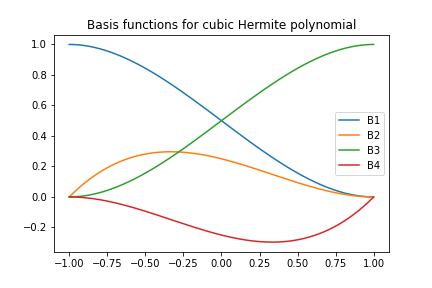 |
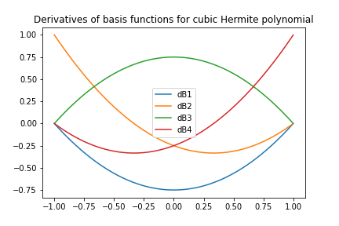 |
\vspace{-1.5cm}
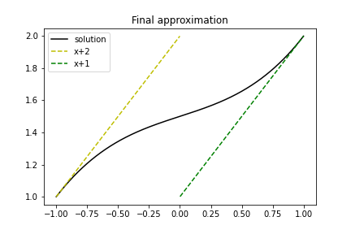
Całkowanie numeryczne
- \( \int_\Omega f\basphi_idx \) - konieczność całkowania numerycznego
- Współczynniki macierzy lewej strony - zwykle również numerycznie (bo wygodnie)
Ogólna postać kwadratury
$$
\int_{-1}^{1} g(X)dX \approx \sum_{j=0}^M w_jg(\bar X_j),
$$
gdzie
- \( \bar X_j \) to węzły kwadratury
- \( w_j \) – wagi kwadratury
Różne metody -> różny wybór węzłów i wag
Wzór prostokątów
(ang. midpoint rule) – metoda punktu środkowego
Najprostsza metoda
$$
\int_{-1}^{1} g(X)dX \approx 2g(0),\quad \bar X_0=0,\ w_0=2,
$$
Dokładna dla funkcji podcałkowych będących wielomianami 1. stopnia
Metody Newtona-Cotesa
- Idea: węzły kwadratury równomiernie rozmieszczone na \( [-1,1] \)
- Węzły kwadratury często pokrywają się węzłami siatki
Wzór trapezów:
$$
\int_{-1}^{1} g(X)dX \approx g(-1) + g(1),\quad \bar X_0=-1,\ \bar X_1=1,\ w_0=w_1=1,
$$
Wzór Simpsona (parabol):
$$
\int_{-1}^{1} g(X)dX \approx \frac{1}{3}\left(g(-1) + 4g(0)
+ g(1)\right),
$$
gdzie
$$
\bar X_0=-1,\ \bar X_1=0,\ \bar X_2=1,\ w_0=w_2=\frac{1}{3},\ w_1=\frac{4}{3}
$$
Metoda Gaussa-Legendre'a
- optymalne położenie węzłów kwadratury -> wyższa dokładność
- Kwadratury Gaussa-Legendre'a dobranie położenia węzłów oraz wag tak, aby całkować z jak najlepszą dokładnością
$$
\begin{align}
M=1&:\quad \bar X_0=-\frac{1}{\sqrt{3}},\
\bar X_1=\frac{1}{\sqrt{3}},\ w_0=w_1=1
\tag{26}\\
M=2&:\quad \bar X_0=-\sqrt{\frac{3}{{5}}},\ \bar X_0=0,\
\bar X_2= \sqrt{\frac{3}{{5}}},\ w_0=w_2=\frac{5}{9},\ w_1=\frac{8}{9}
\tag{27}
\end{align}
$$
- \( M=1 \): dokładna dla wielomianów 3. stopnia
- \( M=2 \): dokładna dla wielomianów 5. stopnia
- W ogólności, \( M \)-punktowy wzór Gaussa-Legendre'a jest dokładny dla wielomianów stopnia $2M+1$y.
Plik `numint.py zawiera zbiór węzłów i wag dla metody Gaussa-Legendre'a.
Aproksymacja funkcji w 2D
Rozwiązania i algorytmy przedstawione dla aproksymacji funkcji \( f(x) \) w 1D da się rozwinąć i ''przenieść'' na przypadki funkcji \( f(x,y) \) w 2D i \( f(x,y,z) \) w 3D. Ogólne wzory pozostają takie same.
Krótkie omówienie zagadnienia w 2D
Iloczyn skalarny w 2D:
$$
(f,g) = \int_\Omega f(x,y)g(x,y) dx dy
$$
Zastosowanie \LSM{} lub metody Galerkina da URL:
$$
\begin{align*}
\sum_{j\in\If} A_{i,j}c_j &= b_i,\quad i\in\If\\
A_{i,j} &= (\baspsi_i,\baspsi_j)\\
b_i &= (f,\baspsi_i)
\end{align*}
$$
Problem: Jak skonstruować dwuwymiarowe funkcje bazowe \( \baspsi_i(x,y) \)?
Funkcje bazowe 2D jako iloczyn tensorowy funkcji 1D
Korzystając z funkcji bazowych 1D zmiennej \( x \) oraz funkcji bazowych 1D zmiennej \( y \):
$$
\begin{align}
V_x &= \mbox{span}\{ \hat\baspsi_0(x),\ldots,\hat\baspsi_{N_x}(x)\}
\tag{28}\\
V_y &= \mbox{span}\{ \hat\baspsi_0(y),\ldots,\hat\baspsi_{N_y}(y)\}
\tag{29}
\end{align}
$$
Przestrzeń wektorowa 2D może być zdefinowana jako iloczyn tensorowy \( V = V_x\otimes V_y \) z funkcjami bazowymi:
$$
\baspsi_{p,q}(x,y) = \hat\baspsi_p(x)\hat\baspsi_q(y)
\quad p\in\Ix,q\in\Iy\tp
$$
Iloczyn tensorowy
Niech dane będą dwa wektory \( a=(a_0,\ldots,a_M) \) i \( b=(b_0,\ldots,b_N) \). Ich zewnętrznym iloczynem tensorowym ( iloczynem diadycznym jeśli \( N=M \)) jest \( p=a\otimes b \) zdefiniowane jako:
$$ p_{i,j}=a_ib_j,\quad i=0,\ldots,M,\ j=0,\ldots,N\tp$$
Uwaga: \( p \) to macierz/tablica dwuwymiarowa
Przykład: baza 2D jako iloczyn tensorowy przestrzeni 1D:
$$ \baspsi_{p,q}(x,y) = \hat\baspsi_p(x)\hat\baspsi_q(y),
\quad p\in\Ix,q\in\Iy$$
\tiny
iloczyn tensorowy macierzy(dowolnych wymiarów) ->
iloczyn tensorowy wektorów(dowolnych wymiarów) ->
iloczyn diadyczny(tego samego wymiaru)
tensorRównoważność notacji z dwoma lub jednym indeksem
Baza przestrzeni 2D wymaga dwóch indeksów (i podwójnego sumowania) :
$$ u = \sum_{p\in\Ix}\sum_{q\in\Iy} c_{p,q}\baspsi_{p,q}(x,y)
$$
Lub tylko jednego indeksu
$$ u = \sum_{j\in\If} c_j\baspsi_j(x,y)$$
- ile posiadamy odwzorowanie \( (p,q)\rightarrow i \):
$$
\baspsi_i(x,y) = \hat\baspsi_p(x)\hat\baspsi_q(y),
\quad i=p (N_y+1) + q\hbox{ or } i=q (N_x+1) + p
$$
Przykładowa baza przestrzeni 2D; wzory
Dla dwuelementowej bazy 1D
$$ \{ 1, x \} $$
iloczyn tensorowy (wszystkie kombinacje) generuje bazę przestrzeni 2D:
$$ \baspsi_{0,0}=1,\quad \baspsi_{1,0}=x, \quad \baspsi_{0,1}=y,
\quad \baspsi_{1,1}=xy
$$
W notacji jednoindeksowej:
$$ \baspsi_0=1,\quad \baspsi_1=x, \quad \baspsi_2=y,\quad\baspsi_3 =xy
$$
Przykładowa baza przestrzeni 2D; zastosowanie
$$ \baspsi_0=1,\quad \baspsi_1=x, \quad \baspsi_2=y,\quad\baspsi_3 =xy
$$
$$
\int_0^{L_y} \int_0^{L_x}
\left\{
\left[
\begin{array}{cccc}
1\cdot 1 & 1 \cdot x & 1 \cdot y & 1 \cdot xy \\
x\cdot 1 & x \cdot x & x \cdot y & x \cdot xy \\
y\cdot 1 & y \cdot x & y \cdot y & y \cdot xy \\
xy\cdot 1 & xy \cdot x & xy \cdot y & xy \cdot xy
\end{array}
\right]
\left[
\begin{array}{c}
c_0 \\
c_1 \\
c_2 \\
c_3
\end{array}
\right]
=
\left[
\begin{array}{c}
1\cdot f(x,y) \\
x\cdot f(x,y) \\
y\cdot f(x,y) \\
xy\cdot f(x,y)
\end{array}
\right]
\right\}
dxdy
$$
Funkcja aproksymowana (kwadratowa) \( f(x,y) = (1+x^2)(1+2y^2) \) (po lewej), funkcja aproksymująca (biliniowa) \( u \) (po prawej) (\( x^2y^2 \) vs \( xy \)):
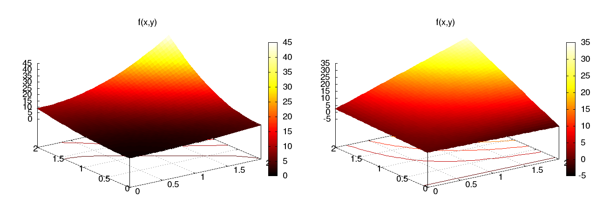
Implementacja; principal changes to the 1D code
Zmiany w kodzie w stosunku do wersji 1D (approx1D.py):
-
Omega = [[0, L_x], [0, L_y]] - Całkowanie symboliczne w 2D
- Generowanie funkcji bazowych 2D (jako iloczynów tensorowych)
Implementacja 2D: całkowanie
import sympy as sym
integrand = psi[i]*psi[j]
I = sym.integrate(integrand,
(x, Omega[0][0], Omega[0][1]),
(y, Omega[1][0], Omega[1][1]))
# Fall back on numerical integration if symbolic integration
# was unsuccessful
if isinstance(I, sym.Integral):
integrand = sym.lambdify([x,y], integrand)
I = sym.mpmath.quad(integrand,
[Omega[0][0], Omega[0][1]],
[Omega[1][0], Omega[1][1]])
Implementacja 2D: funkcje bazowe
Iloczyn tensorowy bazy potęgowej \( x^i \) (bazy Taylora):
def taylor(x, y, Nx, Ny):
return [x**i*y**j for i in range(Nx+1) for j in range(Ny+1)]
Iloczyn tensorowy bazy sinusoidalnej \( \sin((i+1)\pi x) \):
def sines(x, y, Nx, Ny):
return [sym.sin(sym.pi*(i+1)*x)*sym.sin(sym.pi*(j+1)*y)
for i in range(Nx+1) for j in range(Ny+1)]
Cały kod w approx2D.py.
Implementacja 2D: zastosowanie
\( f(x,y) = (1+x^2)(1+2y^2) \)>>> from approx2D import *
>>> f = (1+x**2)*(1+2*y**2)
>>> psi = taylor(x, y, 1, 1)
>>> Omega = [[0, 2], [0, 2]]
>>> u, c = least_squares(f, psi, Omega)
>>> print u
8*x*y - 2*x/3 + 4*y/3 - 1/9
>>> print sym.expand(f)
2*x**2*y**2 + x**2 + 2*y**2 + 1
Implementacja 2D: przykład zastosowanie bazy umożliwiającej konstrukcję rozwiązania dokładnego
Dodajemy funkcje bazowe o wyższych potęgach tak, aby \( f\in V \). Spodziewany wynik: \( u=f \)
>>> psi = taylor(x, y, 2, 2)
>>> u, c = least_squares(f, psi, Omega)
>>> print u
2*x**2*y**2 + x**2 + 2*y**2 + 1
>>> print u-f
0
Uogólnienie do zagadnień 3D
Kluczowa idea:
\vspace{-0.5cm}
$$ V = V_x\otimes V_y\otimes V_z$$
$$
\begin{align*}
a^{(q)} &= (a^{(q)}_0,\ldots,a^{(q)}_{N_q}),\quad q=0,\ldots,m\\
p &= a^{(0)}\otimes\cdots\otimes a^{(m)}\\
p_{i_0,i_1,\ldots,i_m} &= a^{(0)}_{i_1}a^{(1)}_{i_1}\cdots a^{(m)}_{i_m}
\end{align*}
$$
W szczególności dla 3D:
\vspace{-0.6cm}
$$
\begin{align*}
\baspsi_{p,q,r}(x,y,z) &= \hat\baspsi_p(x)\hat\baspsi_q(y)\hat\baspsi_r(z)\\
u(x,y,z) &= \sum_{p\in\Ix}\sum_{q\in\Iy}\sum_{r\in\Iz} c_{p,q,r}
\baspsi_{p,q,r}(x,y,z)
\end{align*}
$$
Elementy skończone w 2D i 3D
Zalety \FEM{} w zastosowaniach 2D i 3D:
- łatwość aproksymowania skomplikowanych geometrii
- łatwość generowania wielomianów (funkcji bazowych) wyższych rzędów w celu zwiększenia dokładności aproksymacji funkcji
\FEM{} w 1D: głównie dla celów dydaktycznych, debugowania
Przykłady komórek 2D i 3D
2D:
- trójkąty (triangles)
- czworokąty (quadrilaterals)
3D:
- czworościany (tetrahedra)
- sześciościany (hexahedra)
Obszar prostokątny (2D) zbudowany z elementów typu P1
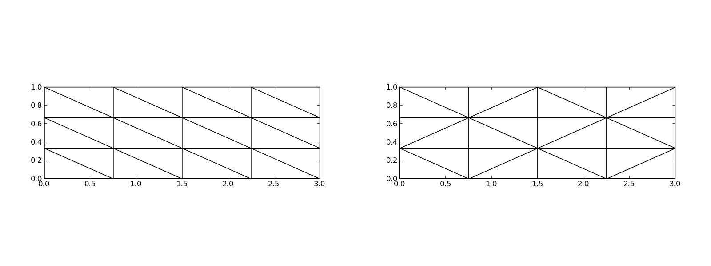
Nieregularny obszar 2D zbudowany z elementów typu P1
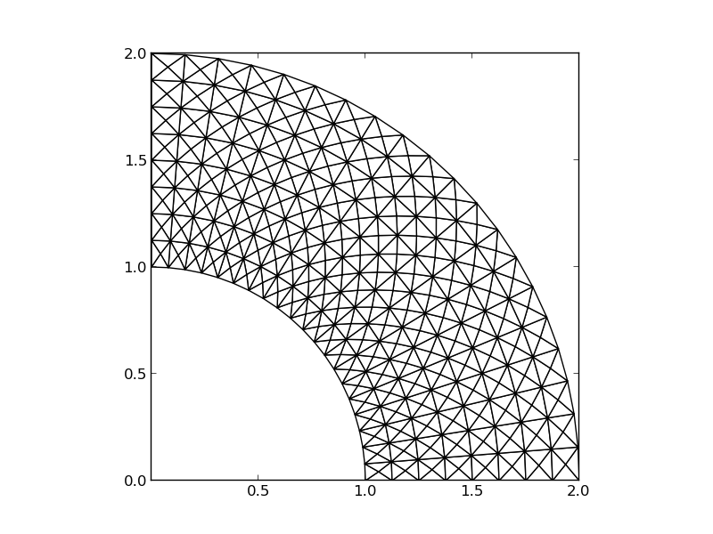
Obszar prostokątny (2D) zbudowany z elementów typu Q1
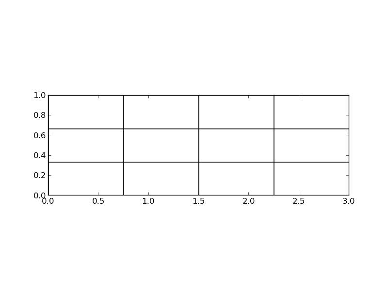
Aproksymacja funkcji 2D na siatce elementów trójkątnych
Element trójkątny typu P1: aproksymacja \( u \) na każdym elemencie (komórce) funkcją liniową \( ax + by + c \)
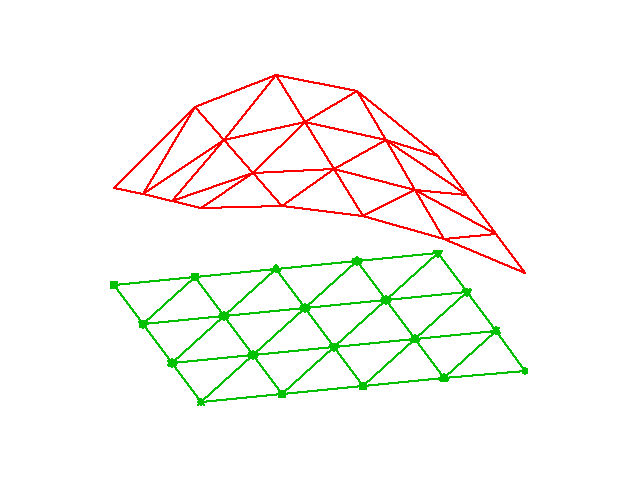
Własności elementów 2D typu P1
- Komórki = trójkąty
- Wierzchołki = wierzchołki komórek
- węzły = wierzchołki trójkąta
- Stopnie swobody = wartości funkcji w węzłach
- \( \refphi_r(X,Y) \) jest funkcją liniową na komórce unormowanej
- \( \basphi_i(x,y) \) jest odzorowaniem \( \refphi_r(X,Y) \) na komórce rzeczywistej
Odwzorowanie liniowe elementu unormowanego na komórkę trójkątną
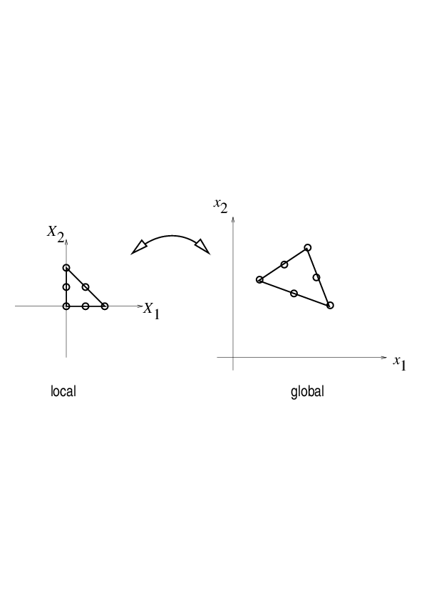
\( \basphi_i \): funkcja-piramida
- \( \basphi_i(x,y) \) – zmienność liniowa na poszczególnych komórkach
- \( \basphi_i=1 \) w wierzchołku (węźle) \( i \), 0 w pozostałych wierzchołkach (węzłach)
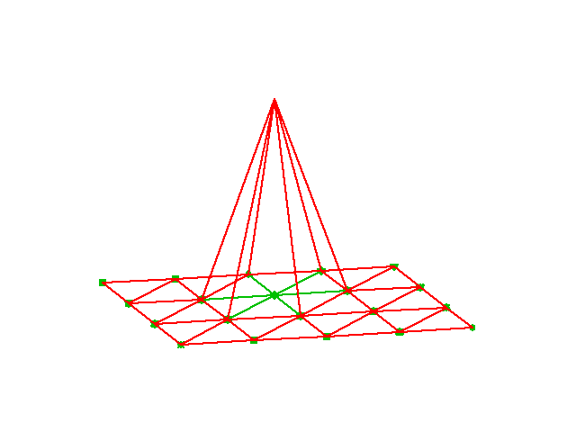
Elementy macierzy i wektora prawej strony
- Jak w 1D, wkład pojedynczej komórki do macierzy globalnego URL ogranicza się do kilku wartości w macierzy i wektorze wyrazów wolnych
- \( \basphi_i\basphi_j\neq 0 \) wtedy i tylko wtedy gdy \( i \) oraz \( j \) są stopniami swobody (wierzchołkami/węzłami) na tym samym elemencie
- Lokalna macierz trójkątengo elementu P1 to macierz o rozmiarach \( 3\times 3 \)
Funkcje bazowe na unormowanym elemencie trójkątnym
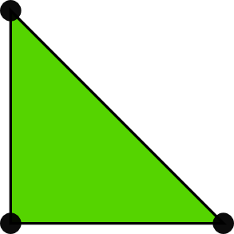
$$
\begin{align}
\refphi_0(X,Y) &= 1 - X - Y
\tag{30}\\
\refphi_1(X,Y) &= X
\tag{31}\\
\refphi_2(X,Y) &= Y
\tag{32}
\end{align}
$$
Funkcje bazowe \( \refphi_r \) wyższych stopni opierają się na większej liczbie węzłów (stopni swobody)
Elementy trójkątne typu P1, P2, P3, P4, P5, P6 przestrzeni 2D
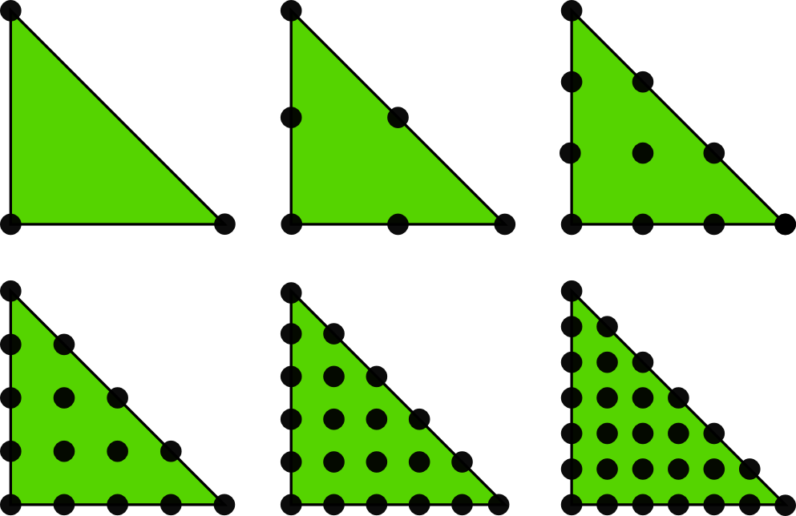
Elementy P1 przestrzeni 1D, 2D i 3D
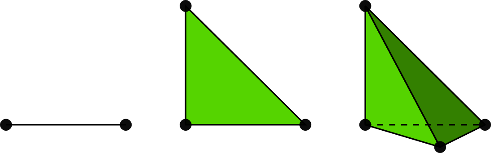
Elementy P2 przestrzeni 1D, 2D i 3D
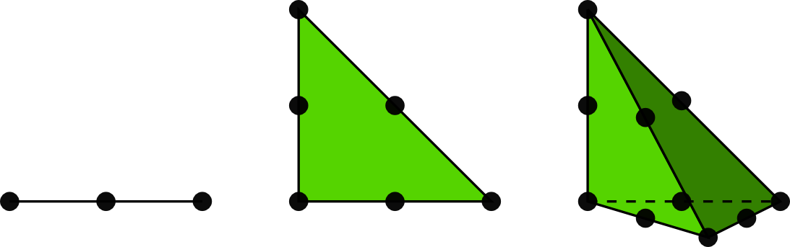
- Interval, triangle, tetrahedron: sympleksy (ang. simplex -> *simplices*/*simplexes*)
- ściana (ang. face) – bok komórki (ścianka/krawedź/punkt)
- W czworościanie również krawędzie (edges)
Odwzorowanie afiniczne komórki unormowanej – wzór
Transformacja (Odwzorowanie) komórki we współrzędnych unormowanych
\( \X = (X,Y) \)do komórki we współrzędnych globalnych:
\( \x = (x,y) \):
$$
\begin{equation}
\x = \sum_{r} \refphi_r^{(1)}(\X)\xdno{q(e,r)}
\tag{33}
\end{equation}
$$
gdzie
- \( r \) przebiega przez wszystkie wierzchołki komórki
- \( \xdno{i} \) to globalne współrzędne \( (x,y) \) wierzchołka \( i \)
- \( \refphi_r^{(1)} \) to funkcja bazowa typu P1
Odwzorowanie zachowuje liniowość ścian i krawędzi.
- TODO (Przykład rachunkowy)
Odwzorowanie afiniczne komórki unormowanej
Komórki izoparametryczne
Idea: Wykorzystanie funkcji bazowych elementu (nie tylko funkcji typu P1 ale i wyższych rzędów) do odwzorowania geometrii:
$$
\x = \sum_{r} \refphi_r(\X)\xdno{q(e,r)}
$$
Zaleta: pozwala generować elementy o geomtrii nielinowej
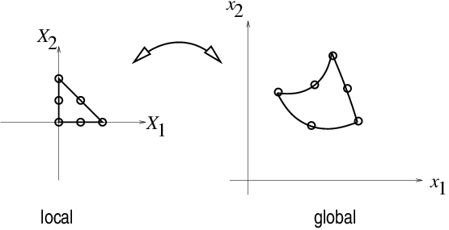
Obliczanie całek
Wymagana transformacja całek z \( \Omega^{(e)} \) (komórka we współrządnych globalnych) w \( \tilde\Omega^r \) (komórka unormowana/odniesienia):
$$
\begin{align}
\int_{\Omega^{(e)}}\basphi_i (\x) \basphi_j (\x) \dx &=
\int_{\tilde\Omega^r} \refphi_i (\X) \refphi_j (\X)
\det J\, \dX
\tag{34}\\
\int_{\Omega^{(e)}}\basphi_i (\x) f(\x) \dx &=
\int_{\tilde\Omega^r} \refphi_i (\X) f(\x(\X)) \det J\, \dX
\tag{35}
\end{align}
$$
gdzie \( \dx = dx dy \) lub \( \dx = dxdydz \) oraz \( \det J \) to wyznacznik jakobianu odwzorowania \( \x(\X) \).
$$
J = \left[\begin{array}{cc}
\frac{\partial x}{\partial X} & \frac{\partial x}{\partial Y}\\
\frac{\partial y}{\partial X} & \frac{\partial y}{\partial Y}
\end{array}\right], \quad
\det J = \frac{\partial x}{\partial X}\frac{\partial y}{\partial Y}
- \frac{\partial x}{\partial Y}\frac{\partial y}{\partial X}
$$
Odwzorowanie afiniczne (33): \( \det J=2\Delta \), \( \Delta = \hbox{powierzchnia komórki/elementu} \)
Uwaga dot. uogólnienia FEM z 1D do 2D/3D
Ogólna idea \FEM{} oraz kroki algorytmu – takie same niezależnie od wymiarowości geometrii.
Im wyższy wymiar przestrzeni, tym większy nakład obliczeniowy. ze względu na komplikację wzorów.
Obliczenia ręczne - nużące, podatne na popełnienie pomyłki.
Automatyzacja i algorytmizacja problemu pożądana.